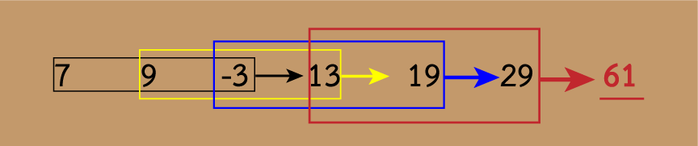

(เกณฑ์่ผ่าน 60%)
การเรียงประโยค
คำสั่ง: ข้อ 1-5 จงพิจารณาข้อความในตัวเลือก แล้วจัดเรียงลําดับให้ถูกต้อง
ข้อ 1. ข้อความใดอยู่ลำดับที่ 3
- ความเรียงจึงเป็นงานเขียนที่สื่อความคิดของผู้เขียนเป็นสำคัญ
- ความเรียง เป็นงานเขียนที่เน้นในเรื่องของการแสดงความคิดเห็น
- ทำให้ความเรียงเป็นงานที่ให้คุณค่าด้านแง่คิดในเชิงปรัชญาเกี่ยวกับโลกและชีวิต
- เป็นงานเขียนร้อยแก้วที่ไม่ยาวนัก
- และเป็นเรื่องราวที่ผู้เขียนแสดงความคิดเห็น
เรียงข้อความได้ดังนี้ 4 - 1 - 5 - 2 - 3
ความเรียง 1) เน้นการแสดงออก → 2) เป็นร้อยแก้ว → 3) เป็นการแสดงความคิดเห็น → 4) จึง(สรุป - เหตุ)... → 5) ทำให้.(ผล)...
ข้อ 2. ข้อความใดอยู่ลำดับที่ 4
- ฉันได้รับการดูแลอย่างดีจากพ่อแม่
- ตั้งแต่วันที่ฉันจำความได้
- แต่พ่อและแม่ก็ไม่สั่งให้ฉันทำงานบ้างเลย
- หลายครั้งฉันมีความรู้สึกอยากจะแบ่งเบาภาระพ่อและแม่บ้าง
เรียงข้อความได้ดังนี้ 2 – 1 – 4 - 3
ตั้งแต่วันที่ฉัน.(เกริ่นนำด้วยเวลา) → การเลี้ยงดูจากพ่อแม่ → ฉันรู้สึก (ผลจากการเลี้ยงดู) → แต่.. (แสดงความขัดแย้ง)....
ข้อ 3. ข้อความใดอยู่ลําดับที่ 2
- แต่คําว่าเรียงความเรามักจะใช้ในความหมายของวิชาการเขียนเรียงความ
- ส่วนความเรียงนั้นใช้เรียกสิ่งที่เขียน หรือเรียบเรียงขึ้นเป็นเรื่องราว ด้วยภาษาที่ใช้พูดกันธรรมดา
- แท้จริงความเรียงก็คือเรียงความอย่างหนึ่ง
- "ความเรียงกับเรียงความ" สองคํานี้มีผู้ใช้แทนกันบ้างสลับกันบ้าง
เรียงข้อความได้ดังนี้ ... 4 – 3 – 1 – 2
"ความเรียงกับเรียงความ" สองคํานี้มีผู้ใช้แทนกันบ้างสลับกันบ้าง
แท้จริงความเรียงก็คือเรียงความอย่างหนึ่ง
แต่คําว่าเรียงความเรามักจะใช้ในความหมายของวิชาการเขียนเรียงความ
ส่วนความเรียงนั้นใช้เรียกสิ่งที่เขียน หรือเรียบเรียงขึ้นเป็นเรื่องราว ด้วยภาษาที่ใช้พูดกันธรรมดา
ข้อ 4. ข้อความใดอยู่ลำดับที่ 4
- ทําความหนักอกหนักใจให้แก่โรงเรียนและผู้ปกครอง
- จะเป็นได้หรือไม่ว่าการที่นักเรียนของเราทุกวันนี้กลายเป็นเด็กเกเร
- คอยแต่จะฝ่าฝืนระเบียบของโรงเรียน
- ก็เพราะครูไม่สนใจในบุคลิกภาพของตน
เรียงข้อความได้ดังนี้ 3 – 1 – 2 – 4
ปัญหา เด็กเกเร → ขยายความคำว่าเกเร → ผลของการเกเร → เสนอประเด็นการแก้ปัญหา
จะเป็นได้หรือไม่ว่าการที่นักเรียนของเราทุกวันนี้กลายเป็นเด็กเกเร
คอยแต่จะฝ่าฝืนระเบียบของโรงเรียน
ทําความหนักอกหนักใจให้แก่โรงเรียนและผู้ปกครอง
ก็เพราะครูไม่สนใจในบุคลิกภาพของตน
ข้อ 5. ข้อความใดอยู่ลําดับที่ 2
- สำหรับประเทศไทยมีองค์การบริหารจัดการก๊าซเรือนกระจก เป็นหน่วยวิเคราะห์ และรับรองโครงการคาร์บอนเครดิต
- “คาร์บอนเครดิต” หมายถึง สิทธิที่เกิดจากการลดการปล่อยก๊าซเรือนกระจก หรือ คาร์บอนไดออกไซด์ออกสู่สิ่งแวดล้อม
- ซึ่งสิทธิดังกล่าวจะต้องมีการรับรองโดยหน่วยรับรองของทางราชการ
- รวมถึง การเก็บกัก หรือ การดูดกลับด้วย จากกิจกรรมหรือโครงการ
เรียงข้อความได้ดังนี้ 2 – 4 – 3 – 1
“คาร์บอนเครดิต” หมายถึง สิทธิที่เกิดจากการลดการปล่อยก๊าซเรือนกระจก หรือ คาร์บอนไดออกไซด์ออกสู่สิ่งแวดล้อม
รวมถึง การเก็บกัก หรือ การดูดกลับด้วย จากกิจกรรมหรือโครงการ
ซึ่งสิทธิดังกล่าวจะต้องมีการรับรองโดยหน่วยรับรองของทางราชการ
สำหรับประเทศไทยมีองค์การบริหารจัดการก๊าซเรือนกระจก เป็นหน่วยวิเคราะห์ และรับรองโครงการคาร์บอนเครดิต
ความเข้าใจภาษา
คำสั่ง: ข้อ 6 - 15 อ่านข้อความแล้วตอบคำถาม
ข้อ 6.
เรามักได้ยินกันอยู่เสมอ ๆ ในเวลาอธิษฐานว่า เกิดชาติหน้าฉันใด ขอให้มีอาการครบ ๓๒ หรือไม่ก็ขอให้เด็กในท้องมีอาการครบ ๓๒ ส่วนมากก็จะนึกกันว่า หมายถึง อวัยวะต่าง ๆ ภายนอกร่างกาย เช่น หู ตา จมูก แต่เมื่อนับไปนับมาก็ไม่ครบสักที อันที่จริงแล้วอาการ ๓๒ หมายถึง สภาพความเป็นอยู่ลักษณะที่เป็นมนุษย์ตามคติเดิมของไทย ได้แก่ ธาตุดิน ๒๐ อย่าง (คือ ผม ขน เล็บ ฟัน หนัง เนื้อ เอ็น กระดูก เยื่อในกระดูก ไตหรือพุง หัวใจ ตับ พังผืด ม้าม ปอด ไส้ใหญ่ ไส้น้อย อาหารใหม่ อาหารเก่า และสมองศีรษะ) และธาตุน้ำ ๑๒ อย่าง (คือ น้ำดี เสมหะหรือเสลด หนอง เลือด เหงื่อ มันข้นหรือไขมัน น้ำตา มันเหลวหรือน้ำเหลือง น้ำลาย น้ำมูก ไขข้อ และปัสสาวะ) เมื่อมีส่วนประกอบเหล่านี้ครบสมบูรณ์มักเรียกว่า อาการครบ ๓๒
สาระสำคัญของข้อความนี้ คืออะไร
อาการ ๓๒ ประกอบด้วย ธาตุดิน ๒๐ อย่างและธาตุน้ำ ๑๒ อย่าง เป็นการขยายความ ของคำว่า "สภาพความเป็นอยู่ลักษณะที่เป็นมนุษย์ตามคติเดิมของไทย"
ข้ออื่น ๆ เป็นใจความย่อย หรือ ใจความรอง หรือพลความ ไม่ใช่ประเด็นหลักหรือใจความสำคัญ
ข้อ 7.
ดอกมะเขือเป็นสัญลักษณ์ของความเคารพ ความอ่อนน้อมถ่อมตน โดยธรรมชาติของต้นมะเขือเมื่อมีดอก ดอกที่จะทำให้ผลมะเขือได้ ต้องโค้งลง เสมือนผู้อยู่ในอาการแสดงความเคารพ หรือคารวะบุคคลที่ตนยกย่องบูชา ถ้าดอกมะเขือดอกใดชี้ดอกขึ้นเหมือนดอกไม้ชนิดอื่น ดอกนั้นจะไม่ให้ผลและจะเน่าร่วงหล่นไป เปรียบได้กับบุคคลที่ขาดความอ่อนน้อมถ่อมตน ขาดความเคารพก็จะหมดโอกาสที่จะได้รับถ่ายทอดความรู้จากครู
สาระสำคัญของบทความข้างต้นคือข้อใด
ใจความสำคัญอยู่ตอนต้นของย่อหน้า ส่วนอื่น ๆ เป็นพลความ อธิบายว่า ทำไมดอกมะเขือจึงเป็นสัญลักษณ์ของความเคารพ อ่อนน้อมถ่อมตน
ข้อ 8.
แม่บ้านที่ทำการค้าหรือรับจ้างต่าง ๆ เหล่านี้ เลี้ยงลูกไปด้วยไม่ได้ปล่อยทิ้งไว้ บ้านช่องก็ดูแลควบคุมไปด้วยในตัว แม่บ้านเก็บเงินไว้เป็นกอบเป็นกำ หลาย ๆ ปีเข้า ก็พอมีเงินซื้อสวน ไร่นา แม่บ้านขยายเนื้อที่ในบ้านให้เกว้างขวางขึ้น ทำมรดกไว้ให้ลูกหลาน ที่ดินก็ราคาไม่แพง หาซื้อง่าย
ข้อใดสรุปได้สอดคล้องกับข้อความมากที่สุด
ข้อ 2 สรุปไม่ครอบคลุมประเด็นทั้งหมด พูดเพียงส่วนเดียว
ข้อ 3 และข้อ 4 เป็นการสรุปโดยการเติมความคิดของตนเอง ซึ่งไม่มีในเรื่องที่อ่าน
ข้อ 9.
ทุกครั้งที่ฉันได้เสื้อตัว กางเกงตัวใหม่มาเป็นสมบัติ ฉันเกิดความรู้สึกดีใจอยากสวมใส่อยากอวดก็คงเป็นความรู้สึกเช่นเดียวกับเด็กทุกคนที่ได้ของใหม่นั่นแหละ ยิ่งเด็กห้องแถวยากจนอย่างฉันนาน ๆ จะได้ของใหม่ สักชิ้น เสื้อผ้าสักตัว ก็ย่อมต้องดีอกดีใจเป็นทวีคูณ
สาระสําคัญของข้อความนี้คือข้อใด
ใจความสำคัญคือ ความรู้สึกดีใจที่ได้ของใหม่ ส่วนอื่น ๆ เป็นส่วนขยาย หรือ พลความว่า ทำไมจึงดีใจ
ข้อ 10.
การเล่าเรียนในสมัยโบราณต้องอาศัยการฟังเป็นพื้น ท่านจึงจัดเอาการฟังเป็นข้อสำคัญ คนที่จะเป็นนักปราชญ์ได้ก็ต้องได้ฟังมามาก ซึ่งเรียกว่าพหูสูต แต่สมัยนี้วิชาการหนังสือแพร่หลายทั่วไป จึงควรนับการอ่านเข้าในพหูสูตนี้ด้วย รวมความว่า ผู้ที่เป็นนักปราชญ์ จะต้องฟังมากและอ่านมากด้วย
ข้อใดสอดคล้องกับเรื่องที่อ่าน
ข้อ 3 สรุปได้ตรงกับเรื่องที่อ่าน ส่วนข้ออื่น ๆ ขัดแย้งกับเรื่องที่อ่าน
สำหรับ ข้อ 11-15
การทอผ้าไหม ผ้าไหมเป็นงานหัตถศิลป์ที่รู้จักกันทั่วโลกด้วยคุณภาพที่มีเอกลักษณ์ในความงดงาม และความ คงทนของเนื้อผ้า มีลวดลายและเคล็ดลับวิธีที่แตกต่างกันไปตามแต่ละภาค ผ้าไหมมัดหมี่ เป็น ภูมิปัญญาชาวบ้านภาคอีสาน ที่สั่งสมและถ่ายถอดต่อ ๆ กันมาภายในครอบครัว
ผ้าไหมมัดหมี่เป็นผ้าที่ทอขึ้นจาก ที่ผ่านการมัด เพื่อสร้างลวดลายก่อนย้อมสีและทอ เวลาย้อมส่วนที่ถูก มัดไว้ก็จะไม่ติดสีจึงทำให้เกิดลวดลาย ถ้าต้องการหลายสีก็ต้องมัดและย้อมทับหลายครั้ง จนกว่าจะได้สีครบตาม ต้องการ หลังจากย้อมสีแล้วก็จะแก้เชือกที่มัดออก นำเส้นด้ายกรอเข้ากับหลอด เพื่อทอเป็นผืนผ้าต่อไป การทอผ้ามัดหมี่ มีทั้งที่เรียกว่า มัดหมี่ด้ายเส้นยืน มัดหมี่ด้ายเส้นพุ่ง และมัดหมี่ผสม
ประเทศไทยมีการทอผ้ามัดหมี่มาเป็นเวลานานแล้ว โดยเฉพาะในภาคอีสาน ชาวบ้านจะทอผ้ามัดหมี่กันในหลายท้องที่และสอนต่อ ๆ กันมาในครอบครัว เมื่อสมเด็จพระนางเจ้า ฯ พระบรมราชินีนาถ เสด็จ พระราชดำเนินไปทรงเยี่ยมราษฎรในภาคอีสาน ทอดพระเนตรเห็นหญิงชาวบ้านสูงอายุ ที่มารอรับเสด็จนุ่งผ้าไหมมัดหมี่ ที่ผลิตจากชาวบ้าน และทรงตรวจคุณภาพผ้าไหม พร้อมทั้งพระราชทานคำแนะนำ ให้ชาวบ้านพัฒนาการทอ ให้มี คุณภาพดีขึ้น หลังจากนั้นจึงทรงพระกรุณาโปรดเกล้า ฯ ให้มีการฝึกสอนการทอผ้าไหมมัดหมี่ ใน ศูนย์ศิลปาชีพ โครงการศิลปาชีพ และกลุ่มศิลปาชีพที่ตั้งขึ้นในที่ต่าง ๆ
การทอผ้าจก ผ้าจกเป็นผ้าทอผืนแคบ ๆ อาจทอขึ้นจากฝ้ายหรือไหม หรือผสมกันทั้ง 2 อย่างก็ได้ คำว่า “จก” เป็นวิธีการทอผ้าให้เกิดลวดลายขึ้น โดยการใช้ไม้ปลายแหลม หรือขนเม่น งัดซ้อนด้ายยืนขึ้น และใช้ด้ายสีสอดไปตาม รอยซ้อนนั้น การสอดด้ายสีต่าง ๆ ไปตามรอยงัดซ้อนในจังหวะต่าง ๆ กัน ทำให้เกิดลวดลายคล้ายผ้าปัก ดังนั้นการทอ ผ้าจกจึงเป็นการทอและการจกลายไปพร้อม ๆ กัน ทำลวดลายสอดสลับด้วยไหมหรือด้ายสีต่าง ๆ ผ้าชนิดนี้นิยมใช้เป็น ส่วนประกอบตกแต่งผ้าผืนใหญ่ โดยเฉพาะผ้าซิ่น ซึ่งเมื่อประกอบด้วยผ้าจกแล้ว ก็เรียกว่า ผ้าซิ่นตีนจก
การทอผ้าจกต้องใช้ความประณีตมาก ผ้าหนึ่งผืนกว่าจะทอเสร็จใช้เวลาหลายเดือนนักวิชาการด้านผ้าจึงมัก จัดให้การทอผ้าจกเป็นสุดยอดของการทอผ้า
ศิลปะการทอผ้าจกสืบทอดมาจากวัฒนธรรมของชาวไทยเชื้อสายลาวพวน ซึ่งตั้งบ้านเรือนอยู่ที่ตำบลหาดเสี้ยว อำเภอศรีสัชนาลัย จังหวัดสุโขทัย ดังนั้น จึงถือเป็นต้นแบบของการทอผ้าชนิดนี้ เดิมมักเป็นลายหน้ากระดาน หรือลาย แถบคั่นเป็นชั้น ๆ ต่อมาได้มีการคิดดัดแปลงเป็นลวดลายและสีสันให้หลากหลายมากขึ้น และจากการสนับสนุนของ มูลนิธิส่งเสริมศิลปาชีพ ฯ ในปัจจุบันได้มีการทอผ้าจกเกิดขึ้นหลายจังหวัดในภาคเหนือ เช่น อำเภอแม่แจ่ม จังหวัดเชียงใหม่ และอำเภอลอง จังหวัดแพร่
ข้อ 11.
เพราะเหตุใดจึงเรียกผ้าไหมชนิดหนึ่งว่า “ผ้าไหมมัดหมี่”
✓
การมัด ในกระบวนการย้อมสี ทำให้เกิดลวดลาย จึงเรียกว่าผ้ามัดหมี่
ข้อ 12.
คำว่า “ด้ายเส้นยืน” ในย่อหน้าที่ ๓ หมายถึงสิ่งใด
✓
มัดหมี่ด้ายเส้นยืน เป็นวิธีการทอผ้ามัดหมี่อย่างหนึ่ง เส้นยืน คือแนวตั้ง เส้นพุ่ง คือแนวนอน
ข้อ 13.
ข้อแตกต่างระหว่าง ผ้าไหมมัดหมี่และผ้าจก ที่เห็นได้อย่างชัดเจน จากบทความนี้ คือข้อใด
ผ้าไหมมัดหมี่มีแหล่งกำเนิดจากภาคอีสาน
ผ้าจก สืบทอดมาจากวัฒนธรรมของชาวไทยเชื้อสายลาวพวน อำเภอศรีสัชนาลัย จังหวัดสุโขทัย
วัสดุที่ใช้ สามารถใช้ไหมได้เหมือนกัน
ส่วนเรื่องอายุของผู้ผลิตผ้าจก บทความไม่ได้พูดไว้อย่างชัดเจน จึงไม่อาจสรุปได้
ข้อ 14.
จากข้อความข้างต้นข้อใด สรุปได้ไม่ถูกต้อง
ข้อ 1 เป็นการสรุปความเกินกว่าที่บทความพูดถึง เพราะบทความพูดถึงถิ่นกำเนิดของการทอผ้า แต่จะเป็นงานหัตถศิลป์ของทั้งภาคเหนือ และอีสานหรือไม่นั้น ยังไม่อาจสรุปได้จากบทความนี้
ข้อ 15.
จากข้อความข้างต้นงานทอผ้าเป็นงานหัตถศิลป์ที่แสดงให้เห็นคุณลักษณะประการใดของคนไทย ได้ดีที่สุด
การมัดย้อม การจกผ้า เป็นลวดลายต่าง ๆ นับเป็นความคิดสร้างสรรค์ของผู้ผลิตอย่างแท้จริง
ความสามารถในการคิดวิเคราะห์เชิงนามธรรม
อุปมาอุปไมย
ข้อ 16. ลำปาง : เชียงใหม่ :: ? : ?
ลำปาง และ เชียงใหม่ อยู่ภาคเดียวกัน
ยะลา และ ปัตตานี อยู่ภาคเดียวกัน
ข้อ 17. เทา : ดำ :: ? : ?
สีเทา มีสีขาวผสม สีดำเป็นสีกลาง
สีฟ้า มีสีขาวผสม สีขาวเป็นสีกลาง
ข้อ 18. สภานิติบัญญัติ : กฎหมาย :: ? : ?
สภานิติบัญญัติ ออก กฎหมาย
สภากรุงเทพมหานคร ออก ข้อบัญญัติกรุงเทพมหานคร
เทศบาล ออก เทศบัญญัติ
สภานิติบัญญัติ ออก พระราชบัญญัติระเบียบบริหารราชการกรุงเทพมหานคร
ข้อ 19. ไก่ : ไข้หวัดนก :: ? : ?
ไก่ เป็นพาหะของ ไข้หวัดนก
คน เป็นพาหะของ ไข้หวัดใหญ่
ข้อ 20. หน้าต่าง : เพดาน :: ? : ?
แนวตั้ง : แนวราบ
การสรุปความจากภาษา
คำสั่ง ในแต่ละข้อจะประกอบด้วยเงื่อนไขหรือข้อมูลที่กำหนดให้ และข้อสรุปเป็นคู่ ๆ จากเงื่อนไขนั้น ให้ศึกษาเงื่อนไขที่กำหนดให้ก่อน แล้วจึงอาศัยความรู้ที่ได้จากเงื่อนไขดังกล่าวมาใช้พิจารณา ข้อสรุปทั้งสองของแต่ละข้อ แล้วทำตอบลงในกระดาษคำตอบ โดยยึดหลักในการทำตอบดังนี้
เงื่อนไข สำหรับข้อ 21-25
M, N, P, R, J, K และ X เป็นเลขจํานวนเต็มบวกที่ไม่ซ้ำกัน และไม่ได้เรียงลำดับตามอักษรข้างต้น ทั้งนี้ตัวเลขแต่ละตัวห่างกันเท่ากับ 3 โดยมีค่าตั้งแต่ 3 – 30
เงื่อนไข
- M เป็นเลขที่อยู่ตรงกลาง
- N มีค่าน้อยกว่า M
- P มีค่ามากกว่า N แต่น้อยกว่า R
- J มากกว่า M อยู่ 6
- K น้อยกว่า N แต่ X มากกว่า M
เฉลย
โจทย์มีทั้งหมด 7 ตัวเลข แต่ละตัวห่างกัน = 3 ดังนั้น จัดเป็นช่องสำหรับตัวเลขแต่ละตัวไว้ 7 ช่อง หรือ ตำแหน่ง
| 1 | 2 | 3 | 4 | 5 | 6 | 7 |
| M เป็นเลขที่อยู่ตรงกลาง | ||||||
| M | ||||||
| N มีค่าน้อยกว่า M ดังนั้น N อาจจะอยู่ช่องใดช่องหนึ่ง ซึ่งเราจะกำหนดให้เป็นสีแดงไว้ก่อน เพื่อแสดงว่า อาจจะมีการเคลื่อนย้ายได้ภายหลัง | ||||||
| N | N | N | M | |||
| P มีค่ามากกว่า N แต่น้อยกว่า R ดังนั้น P อาจจะอยู่ช่องที่ 2 เป็นต้นไป แต่จะอยู่ช่องที่ 7 ไม่ได้เพราะน้อยกว่า R และ R อาจจะอยู่ช่องที่ 3 เป็นต้นไป | ||||||
| N | N/P | N/P/R | M | P/R | P/R | R |
| J มากกว่า M อยู่ 6 เนื่องจาก แต่ละตัวห่างกัน = 3 ดังนั้น J ต้องอยู่ช่องที่ 6 | ||||||
| N | P | P/R | M | P/R | J | R |
| K น้อยกว่า N แต่ X มากกว่า M K ต้องมาแทรกหน้า N ทำให้ตำแหน่งของ N, P, R เลื่อนออกไป | ||||||
| K | N | P | M | P/R | J | R |
| แต่ X มากกว่า M X อาจจะอยู่ที่ตำแหน่งที่ 5 หรือ 7 ก็ได้ เพราะมากกว่า M แต่จะอยู่ตำแหน่งที่ 6 ไม่ได้ เพราะเป็นของ J ตำแหน่งที่ 3 จึงต้องเป็นของ P เพราะไม่มีใครมาแย่ง ตำแหน่งที่ 5 และ 7 จึงยังไม่แน่ว่า จะเป็นของ X หรือ R | ||||||
| K | N | P | M | X/R | J | X/R |
เมื่อได้ตำแหน่งของตัวอักษรแล้ว เราสามารถนำข้อความ
"ตัวเลขแต่ละตัวห่างกันเท่ากับ 3 โดยมีค่าตั้งแต่ 3 – 30"
ดังนั้นค่าต่ำสุดของ K คือ 3
ค่าสูงสุดของ K จะต้องไม่ทำให้ค่าของตัวเลขตำแหน่งที่ 7 (X หรือ R) ไม่เกิน 30
เนื่องจากมีทั้งหมด 7 ตัวเลข และแต่ละตัวห่างกัน 3 ตัวสุดท้ายคือ 30
ดังนั้น ตัวเลขตัวแรกของแถวสุดท้าย (ค่าสูงสุดของ K) คือ 30 - (3 × 6) = 12
ดังนั้น ค่าสูงสุดของ K คือ 12
นำข้อมูลนี้ มาลงตาราง โดย เขียนเพิ่มลงมาจากบนลงล่าง ครั้งละ 1 ดังวิดีโอข้างล่าง
ตารางที่ได้ มีดังนี้
| K | N | P | M | X/R | J | X/R |
| 3 | 6 | 9 | 12 | 15 | 18 | 21 |
| 4 | 7 | 10 | 13 | 16 | 19 | 22 |
| 5 | 8 | 11 | 14 | 17 | 20 | 23 |
| 6 | 9 | 12 | 15 | 18 | 21 | 24 |
| 7 | 10 | 13 | 16 | 19 | 22 | 25 |
| 8 | 11 | 14 | 17 | 20 | 23 | 26 |
| 9 | 12 | 15 | 18 | 21 | 24 | 27 |
| 10 | 13 | 16 | 19 | 22 | 25 | 28 |
| 11 | 14 | 17 | 20 | 23 | 26 | 29 |
| 12 | 15 | 18 | 21 | 24 | 27 | 30 |
ข้อ 21.
ข้อสรุปที่ 1: ค่าต่ำสุดของ N คือ 3 (เท็จ)
ข้อสรุปที่ 2: ค่าสูงสุดของ X คือ 30 (ไม่แน่ชัด)
ข้อสรุปที่ 1
ค่าต่ำสุด ของ N คือ 6
ข้อสรุปที่ 2
X ไม่แน่ว่าจะอยู่ตำแหน่งที่ 5 หรือ 7 จึงสรุปไม่ได้ว่า จะมีค่าเท่าไร
ข้อสรุปที่ 2 จึงสรุปไม่ได้
ข้อ 22.
ข้อสรุปที่ 1: ค่าสูงสุดของ K คือ 15 (เท็จ)
ข้อสรุปที่ 2: ค่าต่ำสุดของ R = 15 (ไม่แน่ชัด)
ค่าสูงสุดของ K คือ 12
ค่าของ R กับ X ไม่แน่ชัด
ข้อ 23.
ข้อสรุปที่ 1: ถ้า M = 16 แล้ว J = 22 (จริง)
ข้อสรุปที่ 2: ถ้า M = 15 แล้ว P + M = 39 (เท็จ)
เพิ่มเติม
การตัดสิน จริงหรือเท็จ จากข้อความที่มีตัวเชื่อม
ถ้าเป็นการเชื่อมข้อความโดยใช้ตัวเชื่อม "และ", "หรือ" หรือ "ถ้า... แล้ว..."
วิธีการดูว่า ข้อความทั้งสองข้อความ เมื่อเชื่อมเข้าด้วยกันแล้ว ผลที่ได้ จะเป็นจริง หรือเป็นเท็จ ให้พิจารณาแต่ละข้อความ ดังนี้
- ถ้าเชื่อมด้วย "และ" จะเป็นจริง ก็ต่อเมื่อข้อความทั้งสอง เป็นจริง
- ถ้าเชื่อมด้วย "หรือ" จะเป็นจริง ก็ต่อเมื่อมีข้อความใดข้อความหนึ่ง เป็นจริง
- ถ้าเชื่อมด้วย "ถ้า... แล้ว..." จะเป็นเท็จ กรณีเดียว คือ ข้อความข้างหน้าเป็นจริง และข้อความข้างหลัง เป็นเท็จ
สมมุติให้ข้อความแรก เป็นตัว p และข้อความที่สอง เป็นตัว q
| p | q | p และ q | p หรือ q | ถ้า p แล้ว q |
| จริง | จริง | จริง | จริง | จริง |
| จริง | เท็จ | เท็จ | จริง | เท็จ |
| เท็จ | จริง | เท็จ | จริง | จริง |
| เท็จ | เท็จ | เท็จ | เท็จ | จริง |
ข้อ 24.
ข้อสรุปที่ 1: ถ้า R = 16 แล้ว N = 7 (จริง)
ข้อสรุปที่ 2: ถ้า J = 19 แล้ว P มากกว่า K (จริง)
ข้อ 25.
ข้อสรุปที่ 1: ถ้า P = 10 แล้ว N + J = 28 (เท็จ)
ข้อสรุปที่ 2: ค่าน้อยสุดของ N = 6 และค่ามากสุดของ M = 18 (เท็จ)
ถ้า P = 10 แล้ว N + J = 26 (เท็จ)
ค่าน้อยสุดของ N = 6 (จริง) และค่ามากสุดของ M = 18 (เท็จ) สรุป เท็จ
เชื่อมด้วย "และ" ต้องเป็นจริงทั้งคู่ จึงจะเป็นจริง
ข้อ 26.
เงื่อนไข:
2B < (C + D) = E < 3F > G
H < (L + M) ≥ E < G/2
(ทุกตัวอักษรมีค่ามากกว่าศูนย์)
ข้อสรุปที่ 1: E < C
ข้อสรุปที่ 2: B > E
ข้อสรุปที่ 1: E < C -- เท็จ
ข้อสรุปที่ 2: B > E -- เท็จ
ตอบข้อ 2
ข้อสรุปที่ 1: E < C
จาก E ไป C ตามเงื่อนไข คือ
E = C + D
ได้ E เหมือนข้อสรุปข้างหนึ่งแล้ว อีกข้างเอา C มาเทียบได้
E = C + D > C
ยุบรวม
E > C
ตัดสินข้อสรุป
ข้อสรุปที่ 1: E < C
ข้อสรุปที่ 1 เป็นเท็จ
ข้อสรุปที่ 2: B > E
จาก B ไป E ตามเงื่อนไข คือ
2B < (C + D) = E
ยุบรวม
2B < E
ได้ E เหมือนข้อสรุปข้างหนึ่งแล้ว อีกข้างเอา B มาเทียบได้
B < 2B < E
ยุบรวม
B < E
ตัดสินข้อสรุป
ข้อสรุปที่ 2: B > E
ข้อสรุปที่ 2 เป็นเท็จ
ข้อสรุปที่ 1: เท็จ
ข้อสรุปที่ 2: เท็จ
ตอบ ข้อ 2 ข้อสรุปเป็นเท็จทั้งสองข้อ
ข้อ 27.
เงื่อนไข:
2B < (C + D) = E < 3F > G
H < (L + M) ≥ E < G/2
(ทุกตัวอักษรมีค่ามากกว่าศูนย์)
ข้อสรุปที่ 1: D < 3F
ข้อสรุปที่ 2: 3G > E
ข้อสรุปที่ 1: D < 3F -- จริง
ข้อสรุปที่ 2: 3G > E -- จริง
ตอบข้อ 1
ข้อสรุปที่ 1: D < 3F
จาก D ไป 3F ตามเงื่อนไข คือ
C + D = E < 3F
ยุบรวม
C + D < 3F
ได้ 3F เหมือนข้อสรุปข้างหนึ่งแล้ว อีกข้างเอา D มาเทียบได้
D < C + D < 3F
ยุบรวม
D < 3F
ตัดสินข้อสรุป
ข้อสรุปที่ 1: D < 3F
ข้อสรุปที่ 1 เป็นจริง
ข้อสรุปที่ 2: 3G > E
จาก G ไป E ตามเงื่อนไข คือ
G < 3F > E
มีเครื่องหมายสวนกัน สรุปได้ไม่แน่ชัด
ลองดูอีกเส้นทางหนึ่ง จากเงื่อนไขบรรทัดล่าง
G/2 > E
ได้ E เหมือนข้อสรุปข้างหนึ่งแล้ว อีกข้างเอา 3G มาเทียบได้
G สามตัว ย่อมมากกว่า G ครึ่งตัว
3G > G/2 > E
ยุบรวม
3G > E
ตัดสินข้อสรุป
ข้อสรุปที่ 2: 3G > E
ข้อสรุปที่ 2 เป็นจริง
ข้อสรุปที่ 1: จริง
ข้อสรุปที่ 2: จริง
ตอบ 1 ข้อสรุปเป็นจริงทั้งสองข้อ
ข้อ 28.
เงื่อนไข:
2B < (C + D) = E < 3F > G
H < (L + M) ≥ E < G/2
(ทุกตัวอักษรมีค่ามากกว่าศูนย์)
ข้อสรุปที่ 1: B < C
ข้อสรุปที่ 2: 2D > G
ข้อสรุปที่ 1: B < C -- ไม่แน่นอน
ข้อสรุปที่ 2: 2D > G -- เท็จ
ตอบข้อ 4
ข้อสรุปที่ 1: B < C
จาก B ไป C ตามเงื่อนไข คือ
2B < (C + D)
เอา 2 หาร เพื่อให้ได้ข้างหนึ่งเหมือนข้อสรุป
2B/2 < (C + D)/2
B < C/2 + D/2
ได้ B เหมือนข้อสรุปข้างหนึ่งแล้ว อีกข้างเอา C มาเทียบได้
ระหว่าง C/2 + D/2 กับ C เราจะไม่รู้ว่า ใครจะมากหรือน้อยกว่ากัน
C/2 = 0.5C
D/2 = 0.5D
และ
C = 0.5C + 0.5C
เปรียบเทียบระหว่าง
0.5C + 0.5D กับ 0.5C + 0.5C
สรุปแล้วก็คือ ระหว่าง D กับ C ถ้าเรารู้ว่าใครมากกว่ากัน เราก็จะรู้ว่า ระหว่าง 0.5C + 0.5D กับ 0.5C + 0.5C ใครมากกว่ากัน
แต่ในเงื่อนไข ไม่มีการเปรียบเทียบระหว่าง C กับ D เราจึงไม่รู้ว่าใครจะมาก หรือน้อยกว่ากัน
จึงสรุปว่า ข้อสรุปที่ 1 สรุปได้ไม่แน่นอน
ข้อสรุปที่ 2: 2D > G
จาก D ไป G ตามเงื่อนไข คือ
(C + D) = E < 3F > G
มีเครื่องหมายสวนทางกัน สรุปได้ไม่แน่ชัด
ลองดูเส้นทางอื่น
จาก D ไป G ผ่าน E คือ
(C + D) =E < G/2
ยุบรวม
(C + D) < G/2
เอา 2 คูณตลอด เพื่อกำจัดส่วนให้หมดไป
2(C + D) < 2G/2
2C + 2D < G
ได้ G เหมือนข้อสรุปข้างหนึ่งแล้ว อีกข้างเอา 2D มาเทียบได้
2D < 2C + 2D < G
ยุบรวม
2D < G
ตัดสินข้อสรุปที่ 2
ข้อสรุปที่ 2: 2D > G
ข้อสรุปที่ 2 เป็นเท็จ
ข้อสรุปที่ 1: ไม่แน่ชัด
ข้อสรุปที่ 2: เท็จ
ตอบ ข้อ 4 ข้อสรุปต่างกัน
ข้อ 29.
เงื่อนไข:
2B < (C + D) = E < 3F > G
H < (L + M) ≥ E < G/2
ทุกตัวอักษรมีค่ามากกว่าศูนย์
ข้อสรุปที่ 1: 2C + 2D < 3F
ข้อสรุปที่ 2: H < 2M
ข้อสรุปที่ 1: 2C + 2D < 3F -- จริง
ข้อสรุปที่ 2: H < 2M -- ไม่แน่ชัด
ตอบข้อ 4
ข้อสรุปที่ 1: 2C + 2D < 3F
จาก 2C + 2D ไป 3F ตามเงื่อนไข คือ
(C + D) = E < 3F
ยุบรวม
(C + D) < 3F
ได้ 3F เหมือนข้อสรุปข้างหนึ่งแล้ว อีกข้างเอา (2C + 2D) มาเทียบได้
(2C + 2D) > (C + D) < 3F
มีเครื่องหมายสวนทางกัน สรุปได้ไม่แน่ชัด
ลองดูอีกทาง
(C + D) ไป 3F ผ่าน E และ G
(C + D) = E < G/2 < G < 3F
ยุบรวม
(C + D) < 3F
ได้ 3F เหมือนข้อสรุปข้างหนึ่งแล้ว อีกข้างเอา (2C + 2D) มาเทียบได้
(2C + 2D) > (C + D) < 3F
มีเครื่องหมายสวนทางกัน สรุปได้ไม่แน่ชัด
ลองดูอีกที
ถ้า จาก (C + D) ไป 3F ผ่าน E ไป G และเปรียบเทียบกับ 3D
จากเงื่อนไข
(C + D) = E < G/2
ยุบรวม
(C + D) < G/2
เอา 2 คูณตลอด เพื่อให้ได้ (2C + 2D) เหมือนข้อสรุป
2(C + D) < G
2C + 2D < G
แต่จากเงื่อนไขบรรทัดบน เราทราบว่า
G < 3F
ได้ 2C + 2D เหมือนข้อสรุปข้างหนึ่งแล้ว อีกข้าง เอา 3F มาเทียบได้
2C + 2D < G < 3F
ยุบรวม
2C + 2D < 3F
ตัดสินข้อสรุปที่ 1
ข้อสรุปที่ 1: 2C + 2D < 3F
ข้อสรุปที่ 1 เป็นจริง
ข้อสรุปที่ 2: H < 2M
จาก H ไป M ตามเงื่อนไข คือ
H < (L + M)
ได้ H เหมือนข้อสรุปข้างหนึ่งแล้ว อีกข้าง เอา 2M มาเทียบได้
H < (L + M) ?? 2M
ระหว่าง L และ M ในเงื่อนไขไม่มีข้อมูลที่จะให้เราหาความสัมพันธ์ระหว่างกันได้ จึงไม่มีทางที่เราจะนำ L และ M มาเปรียบเทียบกันได้
จึงสรุปว่า ไม่แน่ชัด
ข้อสรุปที่ 1: จริง
ข้อสรุปที่ 2: ไม่แน่ชัด
ตอบ ข้อ 4 ผลการสรุปต่างกัน
ข้อ 30.
เงื่อนไข:
2B < (C + D) = E < 3F > G
H < (L + M) ≥ E < G/2
ทุกตัวอักษรมีค่ามากกว่าศูนย์
ข้อสรุปที่ 1: C = M
ข้อสรุปที่ 2: E > B
ข้อสรุปที่ 1: C = M -- ไม่แน่ชัด
ข้อสรุปที่ 2: E > B -- จริง
ตอบข้อ 4
ข้อสรุปที่ 1: C = M
จาก C ไป M ผ่าน E คือ
(C + D) = E ≤ (L + M)
ยุบรวม
(C + D) ≤ (L + M)
จากเงื่อนไข ไม่มีข้อมูลความสัมพันธ์ระหว่าง C, D, L และ M ในการเปรียบเทียบกันเลย จึงสรุปว่า สรุปได้ไม่แน่ชัด
ข้อสรุปที่ 1: C = M -- ไม่แน่ชัด
ข้อสรุปที่ 2: E > B
จาก E ไป B ตามเงื่อนไขบรรทัดบน คือ
E = (C + D) > 2B
ยุบรวม
E > 2B
เอา B มาเทียบ
E > 2B > B
E > B
ตัดสินข้อสรุป
ข้อสรุปที่ 2: E > B
ข้อสรุปที่ 2 เป็นจริง
ข้อสรุปที่ 1: ไม่แน่ชัด
ข้อสรุปที่ 2: จริง
ตอบ ข้อ 4 ผลการสรุปต่างกัน
ข้อ 31.
เงื่อนไข:
J/K = 3 = (L + M) = N
L ≯ P ≯ Q
(ทุกตัวอักษรมีค่ามากกว่า 0)
ข้อสรุปที่ 1: J ≱ KM
ข้อสรุปที่ 2: (J + N) ≥ (K + 3)
ข้อสรุปที่ 1: J ≱ KM -- เท็จ
ข้อสรุปที่ 2: (J + N) ≥ (K + 3) -- จริง
เปลี่ยนเครื่องหมายเงื่อนไข บรรทัดล่าง
J/K = 3 = (L + M) = N
L ≤ P ≤ Q
เปลี่ยนเครื่องหมายในข้อสรุปที่ 2
ข้อสรุปที่ 1: J < KM
ข้อสรุปที่ 2: (J + N) ≥ (K + 3)
การพิสูจน์ข้อสรุป
ข้อสรุปที่ 1: J < KM
J/K = 3 = (L + M)
ยุบรวม
J/K = (L + M)
เอา K คูณ เพื่อให้ได้ข้างหนึ่งเหมือนข้อสรุป
J = K(L + M)
J = (KL + KM)
J = (KL + KM) > KM
ยุบรวม
J > KM
ข้อสรุปที่ 1 เป็นเท็จ
ข้อสรุปที่ 2: (J + N) ≥ (K + 3)
เปรียบเทียบระหว่าง J กับ K
จากเงื่อนไข
J/K = 3
เอา K คูณตลอด หรือ คูณไขว้
J = 3K
J = 3K > K
J > K
เปรียบเทียบระหว่าง N กับ 3
จากเงื่อนไข
N + (L + M) = 3
N = 3
ดังนั้น
(J + N) ย่อมมากกว่า (K + 3)
ข้อสรุปครอบคลุมผลการพิสูจน์
ข้อสรุปที่ 2 เป็นจริง
ตอบ ข้อ 4
ข้อ 32.
เงื่อนไข:
J/K = 3 = (L + M) = N
L ≯ P ≯ Q
(ทุกตัวอักษรมีค่ามากกว่า 0)
ข้อสรุปที่ 1: L > 3
ข้อสรุปที่ 2: N ≠ M
ข้อสรุปที่ 1: L > 3 -- เท็จ
ข้อสรุปที่ 2: N ≠ M -- จริง
เปลี่ยนเครื่องหมายเงื่อนไข บรรทัดล่าง
J/K = 3 = (L + M) = N
L ≤ P ≤ Q
การพิสูจน์ข้อสรุป
ข้อสรุปที่ 1: L > 3
(L + M) = 3
L < (L + M) = 3
ยุบรวม
L < 3
ข้อสรุปที่ 1 เป็นเท็จ
ข้อสรุปที่ 2: N ≠ M
N = (L + M)
N = (L + M) > M
ยุบรวม
N > M
ข้อสรุปที่ 2 เป็นจริง (มากกว่า ก็คือ ไม่เท่ากัน)
ตอบ ข้อ 4 ข้อสรุปทั้งสอง มีผลการสรุปต่างกัน
ข้อ 33.
เงื่อนไข:
J/K = 3 = (L + M) = N
L ≯ P ≯ Q
(ทุกตัวอักษรมีค่ามากกว่า 0)
ข้อสรุปที่ 1: P = Q
ข้อสรุปที่ 2: K > N
ข้อสรุปที่ 1: P = Q -- ไม่แน่ชัด
ข้อสรุปที่ 2: K > N -- ไม่แน่ชัด
เปลี่ยนเครื่องหมายเงื่อนไข บรรทัดล่าง
J/K = 3 = (L + M) = N
L ≤ P ≤ Q
การพิสูจน์ข้อสรุป
ข้อสรุปที่ 1: P = Q
จากเงื่อนไข
P ≤ Q
แสดงว่า P < Q หรือ P = Q ก็ได้
ดังนั้น ข้อสรุปจึงไม่ครอบคลุมเงื่อนไข
สรุปว่า ข้อสรุปที่ 1 สรุปได้ไม่แน่ชัด
ข้อสรุปที่ 2: K > N
จากเงื่อนไข
J/K = 3 = (L + M) = N
ยุบรวม
J/K = N
จากเงื่อนไข เราทราบว่า N = 3
เอามาแทนค่าดู
J/K = 3
สรุปคือ K อาจจะน้อยกว่า 3 (หรือ K) หรือมากกว่า 3 ก็ได้ เช่น
ถ้า K = 1 (กรณีน้อยกว่า 3 หรือ K) จะทำให้ J = 3
3/1 = 3
ถ้า K = 20 (กรณีมากกว่า 3 หรือ K) จะทำให้ J = 60
60/20 = 3
ดังนั้น
สรุปว่า ข้อสรุปที่ 2 สรุปได้ไม่แน่ชัด
ข้อ 34.
เงื่อนไข:
J/K = 3 = (L + M) = N
L ≯ P ≯ Q
(ทุกตัวอักษรมีค่ามากกว่า 0)
ข้อสรุปที่ 1: N ≤ (P + M)
ข้อสรุปที่ 2: J/K < (L + Q)
ข้อสรุปที่ 1: N ≤ (P + M) -- จริง
ข้อสรุปที่ 2: J/K < (L + Q) -- ไม่แน่ชัด
เปลี่ยนเครื่องหมายเงื่อนไข บรรทัดล่าง
J/K = 3 = (L + M) = N
L ≤ P ≤ Q
การพิสูจน์ข้อสรุป
ข้อสรุปที่ 1: N ≤ (P + M)
จากเงื่อนไข
N = (L + M) --- (1) และ
L ≤ P --- (2)
เอา M บวก (2) ทั้งสองข้าง
(L + M) ≤ (P + M)--- (3)
จาก (1) และ (3)
N = (L + M) ≤ (P + M)
ยุบรวม
N ≤ (P + M)
ข้อสรุปที่ 1 เป็นจริง
ข้อสรุปที่ 2: J/K < (L + Q)
จากเงื่อนไข
J/K = 3 = (L + M)
J/K = (L + M)
เหมือนข้อสรุปข้างหนึ่งแล้ว เอา (L + Q) มาเทียบ
J/K = (L + M) ?? (L + Q)
ระหว่าง M และ Q ไม่มีข้อมูลในเงื่อนไขให้เปรียบเทียบ
ส่งผลให้ สรุปได้ไม่แน่ชัด
ข้อสรุปที่ 2 ไม่แน่ชัด
ตอบ ข้อ 4
ข้อ 35.
เงื่อนไข:
J/K = 3 = (L + M) = N
L ≯ P ≯ Q
(ทุกตัวอักษรมีค่ามากกว่า 0)
ข้อสรุปที่ 1: 3 < KN
ข้อสรุปที่ 2: JK > 3
ข้อสรุปที่ 1: 3 < KN -- ไม่แน่ชัด
ข้อสรุปที่ 2: JK > 3 -- ไม่แน่ชัด
เปลี่ยนเครื่องหมายเงื่อนไข บรรทัดล่าง
J/K = 3 = (L + M) = N
L ≤ P ≤ Q
การพิสูจน์ข้อสรุป
ข้อสรุปที่ 1: 3 < KN
จากเงื่อนไข
J/K = 3 = (L + M) = N
เอา K คูณตลอด
J = 3K = K(L + M) = KN
3K = KN
เหมือนข้อสรุปข้างหนึ่งแล้ว อีกข้าง เอา 3 มาเทียบได้
3 ?? 3K = KN
ระหว่าง 3 กับ 3K เราไม่รู้ว่าใครจะมากกว่ากัน
ถ้า K = 1 แล้ว 3 = 3K
3 = 3 × 1
ถ้า K = 2 แล้ว 3 < 3K
3 < 3 × 2
ถ้า K = 0.1 แล้ว 3 > 3K
(เนื่องจาก เงื่อนไขบอกว่า เป็นตัวเลขมากกว่า ศูนย์ 0.1 > 0) 3 > 3 × 0.1
3 > 0.3
ดังนั้น
ข้อสรุปที่ 1 สรุปได้ไม่แน่ชัด
ข้อสรุปที่ 2: JK > 3
จากเงื่อนไข
J/K = 3
จากเงื่อนไข J และ K อาจะเป็นเลขอะไรก็ได้ ที่หารกันแล้วได้ 3
ดังนั้น
J/K อาจจะมาก หรือน้อยกว่า 3 ก็ได้ เช่น
กรณีมากกว่า 3
J = 18; K = 6
18/6 = 3
JK = (18)(6) = 108
JK > 3
กรณีน้อยกว่า 3
J = 0.6; K = 0.2
0.6/0.2 = 3
JK = (0.6)(0.2) = 0.12
JK < 3
ดังนั้น
ข้อสรุปที่ 2 สรุปได้ไม่แน่ชัด
ตอบ ข้อ 3 ข้อสรุปทั้งสอง สรุปได้ไม่แน่ชัด
ความสามารถในการคิดวิเคราะห์เชิงปริมาณ
อนุกรม
คำสั่ง จงเลือกคำตอบจากตัวเลือก 1. – 4. มาเติมลงในช่องว่าง เพื่อให้ได้อนุกรมที่มีความสัมพันธ์ต่อเนื่องกันอย่างสมเหตุสมผลมากที่สุด
7 9 -3 13 19 29 ........

1024 841 576 289 64 ..........
(ข้อสอบเสมือนจริง กพ 2566)
ข้อนี้ยาก ถ้าเจอลักษณะนี้ข้ามไปก่อนดีกว่า อย่าเสียเวลา
มีตัวเลขน่าสนใจ คือ 1024 และ 64 ซึ่งสามารถมาจากเลขยกกำลัง
ข้อ 38.
1 32 81 64 25 6 ?
เจอเลข 25, 64, 81 แสดงว่า น่าจะเป็นเรื่องยกกำลัง
เลขอะไรก็ตาม ยกกำลังด้วยเลขศูนย์ จะได้เท่ากับ 1 เสมอ
ข้อ 39.
1 8 18 36 67 116 ........
ตีแฉกโดย (ตัวหลัง - ตัวหน้า)
ได้รูปแบบ 3 ชั้น
ข้อ 40.
16 16 19 49 22 100 25 ........
เจอตัวเลข 16, 49 และ 100 แสดงว่าต้องมียกกำลัง
น่าจะมี 2 ชุด
สรุปได้ ดังภาพ
โจทย์คณิตศาสตร์
คำสั่ง จงเลือกคำตอบที่ถูกที่สุดจากตัวเลือก 1. – 4. แล้วกดเลือกคำตอบ
ข้อ 41.
ถ้า 2 * 7 = 196 และ
3 * 8 = 576 แล้ว
1 * 12 = ?
หาทรัพยากร
22 4 ---- (1)
72 49 ---- (2)
2 + 7 = 9 ---- (3)
2 × 7 = 14 ---- (4)
2 - 7 = -5 ---- (5)
7 -2 = 5 ---- (6)
เป้าหมายคือ 196
จะเห็นว่า ถ้าเอา (1) × (2) จะได้เท่าเป้าหมายพอดี
22 × 72 = 4 × 49 = 196
ได้สูตร
(หน้า)2 × (หลัง)2 = ผลลัพธ์
ลองเอาไปใช้
32 × 82 = 9 × 64 = 576
ดังนั้น
12 × 122 = 1 × 144 = 144
ตอบ 144
ข้อ 42.
มีเลขจำนวนเต็มบวกกี่ตัว ที่หาร 150 ได้ลงตัว
(ข้อสอบเสมือนจริง ปี 2566)
ดูคำอธิบายละเอียดที่ เมนูโจทย์คละคณิตศาสตร์ ข้อ 2/80
วิธีการ
- แยกตัวประกอบ
- จัดให้อยู่ในรูปเลขยกกำลัง
- เอาเลขยกกำลังทุกตัวบวกด้วย 1 แล้วนำมาคูณกัน
- ผลคูณที่ได้ คือคำตอบ
- แยกตัวประกอบ
- จัดให้อยู่ในรูปเลขยกกำลัง
5 จำนวน 2 ตัว คือ 52, 3 จำนวน 1 ตัว คือ 31, 2 จำนวน 1 ตัว คือ 21
52, 31, 21 - เอาเลขยกกำลังทุกตัวบวกด้วย 1 แล้วนำมาคูณกัน
(2 + 1) × (1+1) × (1 + 1)
3 × 2 × 2 = 12 ตัว
ตอบ 12 ตัว - ลองให้ Gemini หาเลขทั้ง 12 ตัว พบว่ามีดังนี้ 1, 2, 3, 5, 6, 10, 15, 25, 30, 50, 75 และ 150
ข้อ 43.
กระเป๋าใบหนึ่ง ติดราคาป้ายไว้ 200 บาท แต่ลดให้ลูกค้าอีก 20% จากราคาป้าย ซึ่งผู้ขายยังได้กำไรอยู่ 25% ถามว่า กระเป๋าใบนี้ มีต้นทุนกี่บาท ?
ขาย 80% ของราคาป้าย
ขายไป = 80/100 × 200 = 160 บาท
กำไร 25% ของทุน
ขาย 125 ทุน = 100
ขาย 160 ทุน = 100/125 × 160 = 128 บาท
สำหรับผู้ที่ชอบสูตร
ทุน = %ลดราคา/%กำไร × ราคาป้าย
ลดราคา 20% เหลือ 80%
กำไร 25% คือ 125%
แทนค่า
ทุน = 80/125 × 200
ทุน = 128 บาท
ข้อ 44.
โน้ตบุ๊คตัวหนึ่ง ราคาทุน 24,000 บาท ต้องการขายให้ได้กำไร 20% หลังจากที่ลดราคาแล้ว 40% จะต้องติดป้ายราคาขายโน๊ตบุ๊คตัวนี้ กี่บาท
ต้องการกำไร 20% ต้องขาย 120%
120% ของ 24,000 = 120/100 × 24,000 = 28,800 บาท
ลดราคา 40% ขาย 60%
ขาย 60 ติดป้าย = 100
ขาย 28,800 ติดป้าย = 100/60 × 28,800 = 48,000 บาท
ข้อ 45.
สมศักดิ์ซื้อของทั้งหมด เป็นเงิน 661 บาท โดยซื้อน้ำมันพืช 2 ขวด ราคาขวดละ 89 บาท ซื้อน้ำยาซักผ้านุ่ม 3 ถุง ราคาถุงละ 28 บาท เงินที่เหลือทั้งหมด ซื้อสบู่ ราคาก้อนละ 57 บาท ถามว่า สมศักดิ์ซื้อของทั้งหมด กี่ชิ้น
ซื้อสบู่ = 661 - (89 × 2) - (28 × 3)/57 ก้อน
ซื้อสบู่ = 661 - 178 - 84/57 ก้อน
ซื้อสบู่ =
ซื้อของทั้งหมด = น้ำมันพืช + น้ำยาซักผ้านุ่ม + สบู่
ซื้อของทั้งหมด = 2 + 3 + 7 = 12 ชิ้น
การวิเคราะห์ข้อมูล
คำสั่ง ให้ศึกษาและทำความเข้าใจกับข้อมูลซึ่งเป็นตารางที่กำหนดให้ แล้วจึงอาศัยความรู้ความเข้าใจ จากข้อมูลนั้น ๆ เป็นหลักในการทำตอบ
สำหรับ ข้อ 46-50
| เดือน | สินค้าออก | ∆% | สินค้าเข้า | ∆% |
|---|---|---|---|---|
| ก.ค. | ? | N/A | 21,684.00 | N/A |
| ส.ค. | 23,195.00 | 5.25 | 21,971.00 | 1.32 |
| ก.ย. | 25,170.00 | ? | 21,357.00 | -2.79 |
| ต.ค. | 23,342.00 | -7.26 | ? | 3.37 |
| พ.ย. | ? | -1.04 | 23,258.00 | 5.35 |
| ธ.ค. | 22,380.00 | -3.12 | 20,035.00 | ? |
| Total | 139,226.00 | 130,382.00 |
- จากตาราง "∆%" หมายถึง อัตราการขยายตัว (ร้อยละ) เมื่อเปรียบเทียบกับเดือนที่ผ่านมา
- ∆% = ข้อมูลเดือนปลาย - ข้อมูลเดือนต้น/ข้อมูลเดือนต้น × 100
- จากสูตรข้างต้น เราสามารถนำมาหาค่า ข้อมูลของเดือนต้น, เดือนปลาย หรือ อัตราการขยายตัว ได้ โดยใช้สูตรข้างบน เช่น
ต้องการหามูลค่าสินค้าออก เดือน ก.ค. ซึ่งเป็นช่องที่ยังไม่ทราบข้อมูล
เดือนต้น คือ เดือน ก.ค.
เดือนปลาย คือ เดือน ส.ค.
จากข้อมูลในตาราง
∆% = 5.25
ข้อมูลเดือนปลาย = 23,195 คิดเป็น 23,000
ข้อมูลเดือนต้น = A
แทนค่าในสูตร
∆% = ข้อมูลเดือนปลาย - ข้อมูลเดือนต้น/ข้อมูลเดือนต้น × 100
5 = 23,000 - A/A × 100
5 = 2,300,000 - 100A/A
เอา A คูณทั้งสองข้าง เพื่อกำจัดส่วนให้หมดไป
5A = 2,300,000 - 100A
105A = 2300000
A = 2300000/105
A = 21,904 ล้านดอลล่าร์ สหรัฐ
จะเห็นว่า มีค่าใกล้เคียงกับ 22,039 ซึ่งเป็นตัวเลขที่คิดโดยใช้ตัวเลขจริง
ผลการหาค่าที่หายไปจากตารางได้ดังนี้
มูลค่าการส่งออก-นำเข้าสินค้าของไทย ระหว่างเดือน ก.ค.-ธ.ค. 2566
| เดือน | สินค้าออก | ∆% | สินค้าเข้า | ∆% |
|---|---|---|---|---|
| ก.ค. | 22,039.00 | N/A | 21,684.00 | N/A |
| ส.ค. | 23,195.00 | 5.25 | 21,971.00 | 1.32 |
| ก.ย. | 25,170.00 | 8.51 | 21,357.00 | -2.79 |
| ต.ค. | 23,342.00 | -7.26 | 22,077.00 | 3.37 |
| พ.ย. | 23,100.00 | -1.04 | 23,258.00 | 5.35 |
| ธ.ค. | 22,380.00 | -3.12 | 20,035.00 | -13.86 |
| Total | 139,226.00 | 130,382.00 |
เดือนใด มีอัตราการขยายตัว การส่งออกเมื่อเปรียบเทียบกับเดือนที่ผ่านมา สูงที่สุด?
หาอัตราการเปลี่ยนแปลง การส่งออก ในเดือน ก.ย.
∆% = ข้อมูลเดือนปลาย - ข้อมูลเดือนต้น/ข้อมูลเดือนต้น × 100
∆% = 25,000 - 23,000/23,000 × 100
∆% = 8.7
จะเห็นว่า เดือน กันยายน มีอัตราการเปลี่ยนแปลง มูลค่าการส่งออกสินค้า มากที่สุด
เดือน กรกฎาคม มีมูลค่าการส่งออกสินค้า ประมาณ กี่ล้านดอลล่าร์ สหรัฐ
คำนวณให้แล้วในตัวอย่างข้างบน
ได้คำตอบคือ 21,904 ล้านดอลล่าร์ สหรัฐ
จะเห็นว่า ใกล้เคียงกับ 22,039 ล้านดอลล่าร์ มากกว่าทุกตัวเลือก
ตอบ ข้อ 3
ในเดือน ตุลาคม มูลค่าการนำสินค้าเข้า คิดเป็นประมาณร้อยละเท่าไร ของการนำเข้าสินค้าทั้ง 6 เดือน?
หามูลค่าการนำเข้าสินค้า เดือนตุลาคม
จากสูตร
∆% = ข้อมูลเดือนปลาย - ข้อมูลเดือนต้น/ข้อมูลเดือนต้น × 100
∆% = 5.35 หรือ ≈ 5.00
ข้อมูลเดือนปลาย(พ.ย.) = 23,258.00 หรือ ≈ 23,000
ข้อมูลเดือนต้น(ต.ค.) = A
แทนค่าในสูตร
5 = 23,000 - A/A × 100
A = 21,900
มูลค่าการนำเข้าสินค้าทั้งหมด = 130,382 หรือ ≈130,000
21,900 คิดเป็นร้อยละเท่าไร ของ 130,000
สูตรการหาร้อยละ
ต้องหา/ตัวเทียบ × 100
แทนค่า
21,900/130,000 × 100 = 16.8
ตัวเลือก ข้อ 3 ใกล้เคียงที่สุด
หรือถ้าคิดโดยใช้ข้อมูล เดือน ก.ย. และ ต.ค. จะได้คำตอบ ประมาณ ร้อยละ 16.63 ตัวเลือก ข้อ 3 ก็ยังคงมีค่าใกล้เคียงที่สุด
มูลค่าสินค้าออก ในเดือนพฤศจิกายน มีมูลค่าเท่าไร?
จากสูตร
∆% = ข้อมูลเดือนปลาย - ข้อมูลเดือนต้น/ข้อมูลเดือนต้น × 100
∆% = -3.12 หรือ ≈ -3.00
ข้อมูลเดือนปลาย(ธ.ค.) = 22,380.00 หรือ ≈ 22,000
ข้อมูลเดือนต้น(พ.ย.) = A
แทนค่าในสูตร
-3 = 22,000 - A/A × 100
A = 22,700
มีค่าใกล้เคียงกับ ตัวเลือกข้อ 3 มากที่สุด
ตอบ ข้อ 3
ข้อใด กล่าวถูกต้องเกี่ยวกับการนำเข้า-ส่งออกสินค้า?
- มูลค่าสินค้าออก มีมูลค่ามากกว่า มูลค่าสินค้าเข้า ทุกเดือน -- ไม่ถูก เดือน พ.ย. มูลค่าสินค้าเข้า มากกว่า สินค้าออก
- อัตราส่วนของมูลค่าสินค้าเข้าเดือน ต.ค. : มูลค่าสินค้าเข้าทั้ง 6 เดือน ประมาณ 11 : 65
มูลค่าสินค้าเข้าเดือน ต.ค. = 21,971 หรือ ≈ 22,000
มูลค่าสินค้าเข้าทั้ง 6 เดือน = 130,382 หรือ ≈ 130,000
เดือน ต.ค. : ทั้ง 6 เดือน = มูลค่า เดือน ต.ค./มูลค่า ทั้ง 6 เดือน
อัตราส่วน =2211/13065
อัตราส่วน = 11 : 65
- อัตราการเปลี่ยนแปลงของสินค้าออก ในเดือน ธันวาคม มากกว่า อัตราการเปลี่ยนแปลงของสินค้าเข้า ในเดือนเดียวกัน ---- น้อยกว่า
- ผลรวมของมูลค่าสินค้าออกระหว่างเดือน กันยายน - ตุลาคม มีน้อยกว่า ผลรวมของมูลค่าสินค้าออก ในช่วงเวลาเดียวกัน -- มากกว่า
(เกณฑ์ผ่าน 50%)
Instructions: Select the most appropriate choice for each item.
สำหรับตัวข้อสอบ
| Tim: | Hey Nina, did you see the email I sent about the presentation for the client meeting? |
| Nina: | Hi Tim, yes, I just saw it. It looks great! |
| Tim: | Thanks! I was actually wondering if there's any chance we could ....(51).... the meeting today? Some time this afternoon would work much better for me. |
| Nina: | I'm sorry, but I've got to finish that report today. It's due first thing tomorrow morning, and it's taking longer than I expected. Perhaps we could ....(52).... for tomorrow? |
| Tim: | Absolutely, tomorrow works for me. How about ....(53)....? |
| Nina: | That's very kind of you, Tim, but I think ....(54).... would be best for everyone involved. Does ....(55).... work for you? |
| Tim: | O.K. Let's get together at 3 pm tomorrow. Thanks for being flexible, Nina. |
| Tim: | Hey Nina, did you see the email I sent about the presentation for the client meeting client meeting = การประชุมลูกค้า ?client = ลูกค้า, meeting = การประชุม |
| Nina: | Hi Tim, yes, I just saw it. It looks great! |
| Tim: | Thanks! I was actually wondering if there's any chance we could ....(51).... the meeting today? Some time this afternoon some time = ณ เวลาใดเวลาหนึ่ง (ตอนไหนก็ได้) would work much better for me.some time this afternoon = บ่ายนี้ ตอนไหนก็ได้ sometimes = บางครั้ง (เขียนติดกัน มี s ต่อท้าย) |
| Nina: | I'm sorry, but I've got to finish that report today. It's due first thing tomorrow morning, and it's taking longer than I expected. Perhaps we could fix something up fix something up = เป็นสำนวน หมายถึง จัดหรือเตรียมการ มักใช้กับ การนัดหมาย การประชุม หรือจัดอีเว้นท์ต่าง ๆ for ....(52).... ?ในที่นี้ Nina เสนอว่า อาจจะจัดประชุมในวัน... |
| Tim: | Absolutely absolutely = อย่างแน่นอน (เป็นการตอบรับอย่างไม่มีเงื่อนไข) , tomorrow works for me. How about ....(53).... ? |
| Nina: | That's very kind of you, Tim, but I think sticking to the original schedule sticking to the original schedule = ยึดตามกำหนดเดิม (ที่ Tim บอกว่า เขาสะดวกตอนบ่าย) would be best for everyone ....(54)..... Does ....(55).... work for you?stick = (v.) ติด original = ดั้งเดิม schedule = ตารางกำหนดเวลา |
| Tim: | O.K. Let's get together at 3 pm tomorrow. Thanks for being flexible, Nina. |
ข้อ 51.
reschedule = กำหนดเวลาใหม่
cancel, call off, abandon = ยกเลิก
ดูในบทสนทนา จะเห็นว่า เขาต้องการโทรมาเลื่อนการประชุม ไม่ใช่ยกเลิก
ข้อ 52.
ดูจากบทสนทนา จะเห็นว่า เขาพูดกันเกี่ยวกับวันถัดไป ไม่ใช่วันนี้ หรืออาทิตย์หน้า หรือเดือนหน้า
อีกอย่าง จะเห็นว่า Tim บอกว่า พรุ่งนี้ได้เลย ไม่มีปัญหา ก็แสดงว่า ข้อเสนอของ Nina คือวัน พรุ่งนี้
ข้อ 53.
Nina เขาบอกว่า รายงานของเขาต้องเสร็จพรุ่งนี้เช้า แสดงว่า ตอนเช้าเขาน่าจะยุ่ง การนัดหมายตอนเช้าไม่น่าจะดี
อีกอย่าง Nina ตอบขอบคุณ That's very kind of you. แสดงว่า Tim น่าจะให้ความสำคัญแก่ Nina
คำตอบว่า your earliest convenience (เวลาที่คุณสะดวก) จึงน่าจะดีที่สุด
ข้อ 54.
excluded = ไม่รวมถึง, อยู่นอกขอบเขต
included = รวมเข้าไว้ด้วย เช่น tax included - รวมภาษีแล้ว
involved = ที่มีส่วนเกี่ยวข้อง (กับการประชุม)
concerned = ที่เป็นห่วงใย
ข้อ 55.
สังเกตจากการตอบรับว่า OK แสดงว่า เขาตกลงเวลาตามที่เสนอ
เขาย้ำอีกทีว่า พบกันบ่าย 3 ก็แสดงว่า เขาคงนัด บ่าย 3 นั่นเอง
Vocabulary
ข้อ 56.
You need to __________ cookies to continue using the website. Cookies are necessary.
คุณต้อง (ยอมรับ) คุกกี้ เพื่อที่จะสามารถใช้เว็บต่อไปได้
disable = ทำให้ไร้ความสามารถ, ทำให้ไม่สามารถทำงานได้
accept = ยอมรับ
refuse = ปฏิเสธ
The child refused to eat his vegetables.
decline = ปฏิเสธ (นุ่มนวลกว่า refuse)
I declined the invitation to the party as I have prior plans.
ข้อ 57.
The wind turbines __________ electricity for the nearby town.
กังหันลม (ผลิต) กระแสไฟฟ้า ให้แก่ชุมชนเมืองที่อยู่บริเวณนั้น
transmit = ส่งผ่าน, ถ่ายทอด
produce = ผลิต
harvest = เก็บเกี่ยว
consume = บริโภค
ข้อ 58.
Despite facing challenges, she remained __________ about her future.
แม้ว่าจะเผชิญกับอุปสรรคต่าง ๆ แต่เธอก็ (ยังมีความหวัง - คิดเชิงบวก) เกี่ยวกับอนาคต doubtful = สงสัย
uncertain = ไม่แน่ใจ
apprehensive = วิตกกังวล, หวาดกลัว
ข้อ 59.
Your teacher praised you for your __________ grades in the class.
ครูของคุณ ชมคุณเรื่องเกรด(ที่ดีมาก - โดดเด่น)ในห้องเรียน
outstanding = โดดเด่น
dominant = ครอบงำ, มีอำนาจเหนือ
poor = ย่ำแย่
dismal = น่าผิดหวัง
ข้อ 60.
When a faster runner passes another runner during a race, we say he ...... another runner.
ในขณะที่นักวิ่งที่วิ่งเร็วกว่าวิ่งผ่านนักวิ่งอีกคนหนึ่ง เราเรียกว่า นักวิ่งคนนั้น (แซง) นักวิ่งอีกคนหนึ่ง
surpass = เหนือกว่า
excels = ดีกว่า, เหนือกว่า
overtakes = แซง
shields = เป็นเกราะป้องกัน
Structure
Instructions: Choose the correct answer.
ข้อ 61.
I __________ breakfast this morning, so I'm quite hungry now.
ฉัน ....... อาหารเช้า ก็เลยหิวมาก
ข้อ 1 ถูกต้องตาม Tense แต่ผิดที่ความหมาย เพราะ ถ้าได้กินข้าวเช้า ก็จะไม่รู้สึกหิวมาก
ข้อ 62.
She __________ dinner by the time I __________ at her house.
กิจกรรม 2 อย่าง เกิดขึ้นแล้ว เหตุการณ์แรก ใช้เป็น past perfect tense เหตุการณ์ที่ 2 ใช้เป็น past simple tense
คำว่า "by the time" แสดงว่ามีเหตุการณ์ 2 อย่างเกิดขึ้นไม่พร้อมกัน ในขณะที่เหตุการณ์อย่างหนึ่งเกิดขึ้น ก็มีอีกเหตุการณ์หนึ่งเกิดขึ้นก่อนแล้ว
By the the time I got there, she had already left.
อีตอนที่ผมไปถึงที่นั่น เธอก็จากไปเรียบร้อยแล้ว (ก็เลยไม่ได้เจอกัน)
ข้อ 63.
If I __________ (win) the lottery, I __________ (travel) the world.
ความจริง ข้อ 1 ก็ใช้ได้ แต่ข้อ 2 ดีกว่า เพราะการถูกลอตเตอรี่ ไม่ใช่เรื่องง่าย โอกาสเป็นไปได้มีน้อย จึงใช้ if ในลักษณะที่เหมือนกับเป็นเรื่องสมมุติ
(ดูเรื่อง If Clause ในหัวข้อ ภาษาอังกฤษ)
ข้อ 64.
I love __________ to music while I'm cooking.
กริยา love, hate, like, prefer จะตามด้วย กริยาเติม ing หรือ gerund
ดูเรื่อง การใช้ Infinitive และ Gerund
ข้อ 65.
When we were at Hua-Hin, we went to __________ beach for a swim.
ใช้ the เพื่อชี้เฉพาะลงไปว่า เป็นชายหาดหัวหิน ไม่ใช่ชายหาดทั่ว ๆ ไป
ดูเรื่อง การใช้ a, an และ the
Reading
สำหรับ ข้อ 66-75
Instructions: Read the following information and select the best answer for each item.
climate change = การเปลี่ยนแปลงของภูมิอากาศ
transportation = การขนส่ง
significant = อย่างมีนัยสำคัญ
contributor = ผู้ให้
carbon emissions = การปล่อยก๊าซคาร์บอน
manufacturers = ผู้ผลิต
internal combustion engine = เครื่องยนต์สันดาปภายใน
vehicles = ยานพาหนะ
One of the key
initiatives = ความคิดริเริ่ม
driving = ในการขับเคลื่อน...
Moreover, the EU is focused on developing the necessary infrastructure to support the
the network of = เครือข่าย
charging stations = สถานีชาร์ท(แบตเตอรี่)
range = ระยะทาง
anxiety = ความวิตกกังวล
innovation = นวัตกรรม
battery technology = เทคโนโลยีแบตเตอรี่
In summary, the EU's efforts to promote electric cars align with its broader objectives of reducing carbon emissions, combating climate change, and fostering sustainable transportation systems. By implementing emissions standards, providing financial incentives, and investing in infrastructure and technology, the EU seeks to accelerate the transition to electric vehicles and establish a greener, cleaner future for mobility in Europe.
แปลเป็นภาษาไทย
สหภาพยุโรป (EU) ได้ดำเนินการอย่างแข็งขันในการส่งเสริมการนำรถยนต์ไฟฟ้ามาใช้ ซึ่งเป็นส่วนหนึ่งของกลยุทธ์ที่กว้างขึ้นเพื่อลดการปล่อยก๊าซเรือนกระจกและต่อสู้กับการเปลี่ยนแปลงสภาพภูมิอากาศ ด้วยการขนส่งที่เป็นผู้ก่อมลพิษคาร์บอนรายใหญ่ สหภาพยุโรปมองว่าการเปลี่ยนไปใช้รถยนต์ไฟฟ้า (EV) เป็นสิ่งสำคัญสำหรับการบรรลุเป้าหมายด้านสิ่งแวดล้อม ผ่านความริเริ่มและนโยบายต่างๆ สหภาพยุโรปมุ่งหวังที่จะจูงใจทั้งผู้บริโภคและผู้ผลิตให้ยอมรับรถยนต์ไฟฟ้าเป็นทางเลือกที่สะอาดกว่ารถยนต์ที่ใช้เครื่องยนต์สันดาปภายในแบบเดิม
หนึ่งในความริเริ่มสำคัญที่ขับเคลื่อนการนำรถยนต์ไฟฟ้ามาใช้ในสหภาพยุโรป คือ การกำหนดมาตรฐานการปล่อยมลพิษที่เข้มงวด สหภาพยุโรปได้กำหนดเป้าหมายที่ท้าทายในการลดการปล่อย CO2 จากรถยนต์และรถตู้ ซึ่งผลักดันให้ผู้ผลิตรถยนต์ผลิตยานพาหนะที่มีประสิทธิภาพด้านเชื้อเพลิงมากขึ้น มิเช่นนั้นจะต้องเผชิญกับค่าปรับที่สูง ด้วยการกำหนดมาตรฐานเหล่านี้ สหภาพยุโรปกระตุ้นให้ผู้ผลิตรถยนต์ลงทุนในเทคโนโลยีไฟฟ้าและไฮบริดเพื่อตอบสนองความต้องการและหลีกเลี่ยงการลงโทษ นอกจากนี้ สหภาพยุโรปยังเสนอแรงจูงใจทางการเงินและเงินอุดหนุนให้แก่ผู้บริโภคที่ซื้อรถยนต์ไฟฟ้า เช่น การลดหย่อนภาษี เงินอุดหนุน และเงินคืน ทำให้รถยนต์ไฟฟ้าเป็นตัวเลือกที่ประหยัดและน่าดึงดูดใจมากขึ้นสำหรับผู้ซื้อ
ยิ่งไปกว่านั้น สหภาพยุโรปมุ่งเน้นไปที่การพัฒนาโครงสร้างพื้นฐานที่จำเป็นเพื่อรองรับการนำรถยนต์ไฟฟ้ามาใช้กันอย่างแพร่หลาย ซึ่งรวมถึงการขยายเครือข่ายสถานีชาร์จไฟฟ้าทั่วประเทศสมาชิก เพื่อบรรเทาความกังวลเกี่ยวกับระยะทางที่วิ่งได้ (range anxiety) และอำนวยความสะดวกในการเดินทางไกลด้วยรถยนต์ไฟฟ้า ผ่านโครงการสนับสนุนทางการเงินและความร่วมมือกับผู้มีส่วนได้ส่วนเสียในอุตสาหกรรม สหภาพยุโรปมุ่งหวังที่จะสร้างโครงสร้างพื้นฐานด้านการชาร์จไฟฟ้าที่ครอบคลุม เข้าถึงได้ มั่นคง และสะดวกสำหรับเจ้าของรถยนต์ไฟฟ้า นอกจากนี้ สหภาพยุโรปยังส่งเสริมการวิจัยและพัฒนาเทคโนโลยีแบตเตอรี่เพื่อเพิ่มประสิทธิภาพ ความคุ้มค่า และความยั่งยืนของรถยนต์ไฟฟ้า เพื่อให้แน่ใจว่ารถยนต์ไฟฟ้ากลายเป็นตัวเลือกที่เหมาะสมและสามารถแข่งขันได้สำหรับผู้บริโภคในตลาดยานยนต์
โดยสรุป ความพยายามของสหภาพยุโรปในการส่งเสริมรถยนต์ไฟฟ้าสอดคล้องกับเป้าหมายที่กว้างขึ้นในการลดการปล่อยก๊าซคาร์บอน ต่อสู้กับการเปลี่ยนแปลงสภาพภูมิอากาศ และส่งเสริมระบบการขนส่งที่ยั่งยืน ด้วยการกำหนดมาตรฐานการปล่อยมลพิษ การจัดหาแรงจูงใจทางการเงิน และการลงทุนในโครงสร้างพื้นฐานและเทคโนโลยี สหภาพยุโรปมุ่งหวังที่จะเร่งการเปลี่ยนไปใช้รถยนต์ไฟฟ้าและสร้างอนาคตของระบบการเดินทางในยุโรปที่เป็นมิตรต่อสิ่งแวดล้อม
ข้อ 66.
What is one of the primary reasons for the European Union (EU) promoting electric cars?
The European Union (EU) has been actively promoting the adoption of electric cars as part of its broader strategy to reduce greenhouse gas emissions and combat climate change.
ข้อ 67.
How does the EU incentivize automakers to produce more electric vehicles?
One of the key initiatives driving the adoption of electric cars in the EU is the implementation of stringent emissions standards.
ข้อ 68.
What financial incentives does the EU offer to consumers purchasing electric vehicles?
Additionally, the EU offers financial incentives and subsidies for consumers purchasing electric vehicles, such as tax breaks, grants, and rebates, making EVs more affordable and attractive options for buyers.
ข้อ 69.
What aspect of electric vehicles does the EU focus on developing to support their adoption?
Through funding programs and collaborations with industry stakeholders, the EU aims to build a comprehensive charging infrastructure that is accessible, reliable, and convenient for electric car owners.
ข้อ 70.
How does the EU aim to alleviate range anxiety associated with electric vehicles?
Moreover, the EU is focused on developing the necessary infrastructure to support the widespread adoption of electric cars. This includes expanding the network of charging stations across member states to alleviate concerns about range anxiety and facilitate long-distance travel with EVs.
ข้อ 71.
What type of technology does the EU promote research and innovation in to enhance electric vehicles?
Furthermore, the EU promotes research and innovation in battery technology to enhance the performance, affordability, and sustainability of electric vehicles.
ข้อ 72.
What is the EU's ultimate objective in promoting electric cars?
In summary, the EU's efforts to promote electric cars align with its broader objectives of reducing carbon emissions, combating climate change, and fostering sustainable transportation systems.
ข้อ 73.
How does the EU encourage consumers to choose electric cars over traditional vehicles?
Additionally, the EU offers financial incentives and subsidies for consumers purchasing electric vehicles, such as tax breaks, grants, and rebates, making EVs more affordable and attractive options for buyers.
ข้อ 74.
What role does the EU play in developing electric vehicle infrastructure?
Moreover, the EU is focused on developing the necessary infrastructure to support the widespread adoption of electric cars. This includes expanding the network of charging stations across member states to alleviate concerns about range anxiety and facilitate long-distance travel with EVs.
ข้อ 75.
Why does the EU promote electric cars as a cleaner alternative?
In summary, the EU's efforts to promote electric cars align with its broader objectives of reducing carbon emissions
(เกณฑ์ผ่าน 60%)
ข้อ 76.
บุคคลในข้อใด มีหน้าที่วางแผนและประสานกิจกรรมให้มีการใช้ทรัพยากร ของส่วนราชการต่าง ๆ ในกระทรวงร่วมกัน เพื่อให้เกิดประสิทธิภาพ ความคุ้มค่า และบรรลุเป้าหมายของกระทรวง
พ.ร.บ. ระเบียบบริหารราชการแผ่นดิน
มาตรา ๑๙/๑ ให้ปลัดกระทรวง หัวหน้ากลุ่มภารกิจและหัวหน้าส่วนราชการตั้งแต่ระดับกรมขึ้นไป วางแผนและประสานกิจกรรม ให้มีการใช้ทรัพยากร ของส่วนราชการต่าง ๆ ในกระทรวงร่วมกัน เพื่อให้เกิด ประสิทธิภาพ ความคุ้มค่า และบรรลุเป้าหมายของกระทรวง
ข้อ 77.
การตั้ง ยุบ และเปลี่ยนเขตอำเภอ ให้ตราเป็นกฎหมายใด
พ.ร.บ. ระเบียบบริหารราชการแผ่นดิน
มาตรา ๖๑ ในจังหวัดหนึ่งให้มีหน่วยราชการบริหารรองจากจังหวัด เรียกว่า อำเภอ การตั้ง ยุบ และเปลี่ยนเขตอำเภอ ให้ตราเป็นพระราชกฤษฎีกา
ข้อ 78.
ในกรณีที่ส่วนราชการ ประสงค์จะรับโอนข้าราชการหรือลูกจ้าง อันเนื่องมาจากการยุบส่วนราชการ ต้อง กระทำภายในกี่วัน
พ.ร.บ. ระเบียบบริหารราชการแผ่นดิน
มาตรา ๘ จัตวา
...
ในกรณีที่ส่วนราชการ รัฐวิสาหกิจหรือหน่วยงานอื่นของรัฐ ประสงค์จะรับโอนข้าราชการหรือลูกจ้างตาม วรรคสาม ก็ให้กระทำได้ โดยมิให้ถือว่าข้าราชการหรือลูกจ้างผู้นั้น ได้พ้นจากราชการตามวรรคสาม แต่ทั้งนี้ต้อง กระทำภายในสามสิบวัน นับแต่พระราชกฤษฎีกาตามวรรคหนึ่งมีผลใช้บังคับ
ข้อ 79.
กระทรวงใดมีภารกิจเพิ่มขึ้น และมีความจำเป็นอย่างยิ่งต้องมีรองปลัดกระทรวงมากกว่าที่กำหนดไว้ จะต้องได้รับการอนุมัติ จากข้อใด
พ.ร.บ. ระเบียบบริหารราชการแผ่นดิน
มาตรา ๒๑
...
กระทรวงใดมีภารกิจเพิ่มขึ้น และมีความจำเป็นอย่างยิ่งต้องมีรองปลัดกระทรวงมากกว่าที่กำหนดไว้ใน วรรคห้าหรือวรรคหก คณะกรรมการข้าราชการพลเรือน และคณะกรรมการพัฒนาระบบราชการจะร่วมกันอนุมัติ ให้กระทรวงนั้นมีรองปลัดกระทรวงเพิ่มขึ้นเป็นกรณีพิเศษโดยจะกำหนดเงื่อนไขหรือเงื่อนเวลาไว้ด้วยหรือไม่ก็ได้
ข้อ 80.
ผู้ใดเป็นผู้บังคับบัญชาข้าราชการ ในหน่วยงานที่ มีอำนาจหน้าที่เกี่ยวกับ ราชการของคณะรัฐมนตรี รัฐสภา และราชการในพระองค์
หน่วยงานที่ มีอำนาจหน้าที่เกี่ยวกับ ราชการของคณะรัฐมนตรี รัฐสภา และราชการในพระองค์ คือ สำนักเลขาธิการคณะรัฐมนตรี
ผู้บังคับบัญชาข้าราชการในสำนักเลขาธิการคณะรัฐมนตรี คือ เลขาธิการคณะรัฐมนตรี
พ.ร.บ. ระเบียบบริหารราชการแผ่นดิน
มาตรา ๑๔
สำนักเลขาธิการคณะรัฐมนตรีมีอำนาจหน้าที่เกี่ยวกับราชการของคณะรัฐมนตรี รัฐสภา และราชการในพระองค์ มีเลขาธิการคณะรัฐมนตรี เป็นผู้บังคับบัญชาข้าราชการ และรับผิดชอบในการปฏิบัติ ราชการขึ้นตรง ต่อนายกรัฐมนตรี และให้มีรองเลขาธิการคณะรัฐมนตรี เป็นผู้ช่วยสั่งและปฏิบัติราชการ และจะให้มี ผู้ช่วยเลขาธิการคณะรัฐมนตรีเป็นผู้ช่วยสั่งและปฏิบัติราชการด้วยก็ได้
ข้อ 81.
บุคคลในข้อใด เป็นข้าราชการการเมือง
เลขาธิการนายกรัฐมนตรี เป็นข้าราชการการเมือง
รองเลขาธิการนายกรัฐมนตรี ฝ่ายการเมือง เป็นข้าราชการการเมือง
รองเลขาธิการนายกรัฐมนตรี ฝ่ายบริหาร เป็นข้าราชการพลเรือนสามัญ
เลขาธิการคณะรัฐมนตรี เป็นข้าราชการพลเรือนสามัญ
ข้อ 82.
ข้อใดไม่ใช่เป้าหมายในการบริหารกิจการบ้านเมืองที่ดี
มาตรา ๖ การบริหารกิจการบ้านเมืองที่ดี ได้แก่ การบริหารราชการเพื่อบรรลุเป้าหมาย ดังต่อไปนี้
(๑) เกิดประโยชน์สุขของประชาชน
(๒) เกิดผลสัมฤทธิ์ต่อภารกิจของรัฐ
(๓) มีประสิทธิภาพ และเกิดความคุ้มค่า ในเชิงภารกิจของรัฐ
(๔) ไม่มีขั้นตอนการปฏิบัติงานเกินความจำเป็น
(๕) มีการปรับปรุงภารกิจของส่วนราชการ ให้ทันต่อสถานการณ์
(๖) ประชาชนได้รับการอำนวยความสะดวก และได้รับการตอบสนองความต้องการ
(๗) มีการประเมินผลการปฏิบัติราชการ อย่างสม่ำเสมอ
ข้อ 83.
ในกรณีที่เกิดปัญหาและอุปสรรค ซึ่งสืบเนื่อง เกี่ยวข้องกับส่วนราชการอื่น ส่วนราชการนั้นจะมีวิธีดำเนินการอย่างไร
พ.ร.ฎ.ว่าด้วยหลักเกณฑ์และวิธีการบริหารกิจการบ้านเมืองที่ดี
มาตรา ๘ ในการบริหารราชการเพื่อประโยชน์สุขของประชาชน ส่วนราชการจะต้องดำเนินการ โดยถือว่าประชาชนเป็นศูนย์กลางที่จะได้รับการบริการจากรัฐ และจะต้องมีแนวทางการบริหารราชการ ดังต่อไปนี้
....
(๕) ในกรณีที่เกิดปัญหาและอุปสรรค จากการดำเนินการ ให้ส่วนราชการดำเนินการแก้ไข ปัญหาและอุปสรรคนั้นโดยเร็ว ในกรณีที่ปัญหาหรืออุปสรรคนั้น เกิดขึ้นจากส่วนราชการอื่น หรือระเบียบ ข้อบังคับที่ออกโดยส่วนราชการอื่น ให้ส่วนราชการ แจ้งให้ส่วนราชการที่เกี่ยวข้องทราบ เพื่อดำเนินการแก้ไข ปรับปรุงโดยเร็วต่อไป และให้แจ้ง ก.พ.ร. ทราบด้วย
ข้อ 84.
ข้อใด ไม่ปรากฎใน รายละเอียดของแผนปฏิบัติราชการ ตาม พ.ร.ฎ.ว่าด้วยหลักเกณฑ์และวิธีการบริหารกิจการบ้านเมืองที่ดี
พ.ร.ฎ.ว่าด้วยหลักเกณฑ์และวิธีการบริหารกิจการบ้านเมืองที่ดี
มาตรา ๙ การบริหารราชการเพื่อให้เกิดผลสัมฤทธิ์ต่อภารกิจของรัฐ ให้ส่วนราชการปฏิบัติ ดังต่อไปนี้
(๑) ก่อนจะดำเนินการตามภารกิจใด ส่วนราชการต้องจัดทำแผนปฏิบัติราชการ ไว้เป็นการล่วงหน้า
(๒) การกำหนดแผนปฏิบัติราชการ ของส่วนราชการตาม (๑) ต้องมีรายละเอียดของขั้นตอน ระยะเวลา และงบประมาณ ที่จะต้องใช้ในการดำเนินการของแต่ละขั้นตอน เป้าหมายของภารกิจ ผลสัมฤทธิ์ของภารกิจ และตัวชี้วัดความสำเร็จของภารกิจ
(๓) ส่วนราชการต้องจัดให้มีการติดตาม และประเมินผลการปฏิบัติตามแผนปฏิบัติราชการ ตามหลักเกณฑ์และวิธีการที่ส่วนราชการกำหนดขึ้น ซึ่งต้องสอดคล้องกับมาตรฐานที่ ก.พ.ร. กำหนด
(๔) ในกรณีที่การปฏิบัติภารกิจ หรือการปฏิบัติตามแผนปฏิบัติราชการ เกิดผลกระทบต่อ ประชาชน ให้เป็นหน้าที่ของส่วนราชการ ที่จะต้องดำเนินการแก้ไข หรือบรรเทาผลกระทบนั้น หรือเปลี่ยนแผนปฏิบัติราชการให้เหมาะสม
ข้อ 85.
การจัดทำบัญชีต้นทุนของส่วนราชการ เกี่ยวข้องกับข้อใด มากที่สุด
พ.ร.ฎ.ว่าด้วยหลักเกณฑ์และวิธีการบริหารกิจการบ้านเมืองที่ดี
การจัดทำบัญชีต้นทุนของส่วนราชการ ต้องจัดทำตามหลักเกณฑ์ และวิธีการที่กรมบัญชีกลางกำหนด
การคำนวณรายจ่ายต่อหน่วยของงานบริการสาธารณะ ที่อยู่ในความรับผิดชอบของส่วนราชการนั้น ต้องรายงานให้สำนักงบประมาณ กรมบัญชีกลาง และ ก.พ.ร. ทราบ
ข้อ 86.
หน่วยงานใด มีหน้าที่ประเมินความคุ้มค่า ในการปฏิบัติภารกิจของรัฐของส่วนราชการ
พ.ร.ฎ.ว่าด้วยหลักเกณฑ์และวิธีการบริหารกิจการบ้านเมืองที่ดี
มาตรา ๒๒ ให้สำนักงานคณะกรรมการพัฒนาการเศรษฐกิจและสังคมแห่งชาติ และสำนักงบประมาณ ร่วมกันจัดให้มีการประเมินความคุ้มค่า ในการปฏิบัติภารกิจของรัฐ ที่ส่วนราชการดำเนินการอยู่ เพื่อรายงานคณะรัฐมนตรี สำหรับเป็นแนวทางในการพิจารณาว่า ภารกิจใดสมควรจะได้ดำเนินการต่อไปหรือ ยุบเลิก และเพื่อประโยชน์ในการจัดตั้งงบประมาณ ของส่วนราชการในปีต่อไป ทั้งนี้ ตามระยะเวลาที่ คณะรัฐมนตรีกำหนด
ข้อ 87.
เหตุผลในข้อใด ที่ทำให้้ส่วนราชการไม่จำเป็นต้อง ถือราคาตํ่าสุดในการเสนอซื้อ หรือจ้างเสมอไป
พ.ร.ฎ.ว่าด้วยหลักเกณฑ์และวิธีการบริหารกิจการบ้านเมืองที่ดี
มาตรา ๒๓ ในการจัดซื้อหรือจัดจ้าง ให้ส่วนราชการดำเนินการ โดยเปิดเผยและเที่ยงธรรม โดยพิจารณาถึงประโยชน์ และผลเสียทางสังคม ภาระต่อประชาชน คุณภาพ วัตถุประสงค์ที่จะใช้ ราคา และประโยชน์ระยะยาว ของส่วนราชการที่จะได้รับประกอบกัน
ในกรณีที่วัตถุประสงค์ในการใช้ เป็นเหตุให้ต้องคำนึงถึงคุณภาพ และการดูแลรักษาเป็นสำคัญ ให้สามารถกระทำได้ โดยไม่ต้องถือราคาตํ่าสุดในการเสนอซื้อ หรือจ้างเสมอไป
ข้อ 88.
ข้อใด ไม่อยู่ในบังคับของ พ.ร.บ.วิธีปฏิบัติราชการทางปกครอง
พ.ร.บ.วิธีปฏิบัติราชการทางปกครอง
คณะกรรมการการเลือกตั้ง เป็นองค์กรที่ใช้อำนาจตามรัฐธรรมนูญโดยเฉพาะ
มาตรา ๔ พระราชบัญญัตินี้มิให้ใช้บังคับแก่
(๑) รัฐสภาและคณะรัฐมนตรี
(๒) องค์กรที่ใช้อำนาจตามรัฐธรรมนูญโดยเฉพาะ
(๓) การพิจารณาของนายกรัฐมนตรี หรือรัฐมนตรี ในงานทางนโยบายโดยตรง
(๔) การพิจารณาพิพากษาคดีของศาล และการดำเนินงานของเจ้าหน้าที่ในกระบวนการพิจารณาคดี การบังคับคดี และการวางทรัพย์
(๕) การพิจารณาวินิจฉัยเรื่องร้องทุกข์ และการสั่งการตามกฎหมายว่าด้วยคณะกรรมการกฤษฎีกา
(๖) การดำเนินงานเกี่ยวกับนโยบายการต่างประเทศ
(๗) การดำเนินงานเกี่ยวกับราชการทหาร หรือเจ้าหน้าที่ซึ่งปฏิบัติหน้าที่ทางยุทธการ ร่วมกับทหารในการป้องกัน และรักษาความมั่นคง ของราชอาณาจักร จากภัยคุกคามทั้งภายนอก และภายในประเทศ
(๘) การดำเนินงานตามกระบวนการยุติธรรมทางอาญา
ข้อ 89.
กรรมการผู้ทรงคุณวุฒิ ในคณะกรรมการวิธีปฏิบัติราชการทางปกครอง มีจำนวน กี่คน
พ.ร.บ.วิธีปฏิบัติราชการทางปกครอง
มาตรา ๗ ให้มีคณะกรรมการคณะหนึ่งเรียกว่า “คณะกรรมการวิธีปฏิบัติราชการทางปกครอง” ประกอบด้วยประธานกรรมการคนหนึ่ง ปลัดสำนักนายกรัฐมนตรี ปลัดกระทรวงมหาดไทย เลขาธิการคณะรัฐมนตรี เลขาธิการคณะกรรมการข้าราชการพลเรือน เลขาธิการ คณะกรรมการกฤษฎีกา และผู้ทรงคุณวุฒิอีกไม่น้อยกว่าห้าคน แต่ไม่เกินเก้าคนเป็นกรรมการ
ข้อ 90.
เจ้าหน้าที่ในข้อใด ไม่สามารถจะทำการพิจารณาทางปกครองได้
ตาม กฎกระทรวง พ.ศ. ๒๕๖๖ ผู้ที่เคยเป็นสามี-ภรรยากัน ถึงแม้ว่าจะไม่จดทะเบียนสมรส หรือ ตอนนี้เลิกกันแล้ว ก็ไม่สามารถจะทำการพิจารณาทางปกครองได้
เป็นผู้พักอาศัยอยู่ร่วมกับคู่กรณีในสถานที่เดียวกัน -- ข้อนี้ไม่ชัดเจน คือถ้าอยู่ด้วยกันแบบ สามี-ภรรยา หรือ ครอบครัวเดียวกัน ก็ไม่ได้ แต่ถ้าอยู่ในสถานที่เดียวกัน เช่น คอนโดเดียวกัน แต่คนละห้อง อย่างนี้ ก็พิจารณาได้
เคยเป็นลูกหนี้ แสดงว่าตอนนี้ใช้หนี้หมดแล้ว อย่างนี้ พิจารณาได้ แต่ถ้ายังใช้หนี้ไม่หมด คือ ขณะนี้ มีสถานะเป็นลูกหนี้ของคู่กรณี อย่างนี้ก็จะพิจารณาไม่ได้
ข้อ 91.
คู่กรณีมีหนังสือแต่งตั้งให้ นาย ก. ซึ่งบรรลุนิติภาวะ กระทำการแทนตน ในกระบวนการพิจารณาทางปกครอง ต่อมาคู่กรณีเสียชีวิต ถามว่า ความเป็นผู้แทนของ นาย ก. จะมีสถานะอย่างไร
พ.ร.บ.วิธีปฏิบัติราชการทางปกครอง
มาตรา ๒๔
...
การแต่งตั้งให้กระทำการแทนไม่ถือว่าสิ้นสุดลง เพราะความตายของคู่กรณีหรือการที่ ความสามารถหรือความเป็นผู้แทนของคู่กรณี เปลี่ยนแปลงไป เว้นแต่ผู้สืบสิทธิตามกฎหมาย ของคู่กรณีหรือคู่กรณี จะถอนการแต่งตั้งดังกล่าว
ข้อ 92.
นาย ก. ยื่นคําขอเพื่อให้เจ้าหน้าที่มีคําสั่งทางปกครอง อีก 3 วันต่อมา นาย ก. ได้รับการแจ้งจากเจ้าหน้าที่ว่า เอกสารไม่ครบถ้วน พร้อมทั้งกำหนดเวลาในการส่งเอกสารเพิ่มเติมให้ครบถ้วน แต่นาย ก. ไม่ส่งเอกสารให้ครบถ้วยในเวลาที่กำหนด
กรณีในข้อใด ต่อไปนี้ ไม่ถูกต้อง
กรณีนี้ ถือว่า การยื่นคำขอของ นาย ก. สิ้นสุดลง แต่เจ้าหน้าที่ต้องดำเนินการ คืนเอกสาร แจ้งสิทธิการอุธรณ์ พร้อมทั้งบันทึกการดำเนินการดังกล่าวไว้ด้วย
พ.ร.บ.วิธีปฏิบัติราชการทางปกครอง
มาตรา ๒๗
...
ผู้ยื่นคําขอต้องดําเนินการแก้ไข หรือส่งเอกสารเพิ่มเติม ต่อเจ้าหน้าที่ภายในเวลาที่ เจ้าหน้าที่กําหนด หรือภายในเวลาที่เจ้าหน้าที่อนุญาตให้ขยายออกไป เมื่อพ้นกําหนดเวลาดังกล่าวแล้ว หากผู้ยื่นคําขอไม่แก้ไข หรือส่งเอกสารเพิ่มเติมให้ครบถ้วน ให้ถือว่าผู้ยื่นคําขอ ไม่ประสงค์ที่จะให้เจ้าหน้าที่ดําเนินการตามคําขอต่อไป ในกรณีเช่นนั้น ให้เจ้าหน้าที่ส่งเอกสารคืนให้ผู้ยื่นคําขอ พร้อมทั้งแจ้งสิทธิในการอุทธรณ์ให้ผู้ยื่นคําขอทราบ และบันทึกการดําเนินการดังกล่าวไว้
ข้อ 93.
ในกรณีที่คำสั่งทางปกครอง เป็นคำสั่งด้วยวาจา ถ้าผู้รับคำสั่งนั้น มีเหตุอันสมควร ที่จะ ร้องขอให้ยืนยันคำสั่งนั้นเป็นหนังสือ จะต้องกระทำภายในกี่วัน นับแต่วันที่มีคำสั่งดังกล่าว
พ.ร.บ.วิธีปฏิบัติราชการทางปกครอง
มาตรา ๓๕ ในกรณีที่คำสั่งทางปกครอง เป็นคำสั่งด้วยวาจา ถ้าผู้รับคำสั่งนั้นร้องขอ และการร้องขอ ได้กระทำโดยมีเหตุอันสมควร ภายในเจ็ดวัน นับแต่วันที่มีคำสั่งดังกล่าว เจ้าหน้าที่ ผู้ออกคำสั่ง ต้องยืนยันคำสั่งนั้นเป็นหนังสือ
ข้อ 94.
ข้อใด สอดคล้องกับมาตรฐานทางจริยธรรม เรื่องกล้าตัดสินใจ และกระทำในสิ่งที่ถูกต้องชอบธรรม
ก.พ. พิเศษ 2566
ดู Infographic ของ สำนักงาน ก.พ. ในเมนู การเป็นข้าราชการที่ดี > ตัวอย่างพฤติกรรม ตาม พ.ร.บ.มาตรฐานทางจริยธรรม (Infographics ของ ก.พ.)
- กล้ารับผิดชอบในความผิดพลาด พร้อมรับการตรวจสอบ ไม่กล่าวโทษผู้อื่น เมื่อเกิดข้อผิดพลาด (ซื่อสัตย์ สุจริต มีจิตสำนึก)
- ไม่ดูหมิ่นเหยียดหยาม ไม่ทำลายความมั่นคงของชาติ ไม่ให้ร้ายหรือก่อความเสื่อมเสีย ต่อภาพลักษณ์ของประเทศ (ยึดมั่นในสถาบันหลักของประเทศ)
- สามารถแยกเรื่องส่วนตัวออกจากหน้าที่การงาน ไม่แสวงหาประโยชน์โดยมิชอบ จากตำแหน่งหน้าที่ (คิดถึงประโยชน์ส่วนรวม มากกว่าประโยชน์ส่วนตัว และมีจิตสาธารณะ)
ข้อ 95.
"ภาคภูมิใจในความเป็นข้าราชการ ธำรงศักดิ์ด้วยความถูกต้อง ชอบธรรม" ตรงกับจริยธรรม ข้อใด
e-Exam 2566
ดู เอกสาร สำนักงาน ก.พ. ในเมนู การเป็นข้าราชการที่ดี > ตัวอย่างพฤติกรรม ตาม พ.ร.บ.มาตรฐานทางจริยธรรม (Infographics ของ ก.พ.) หน้า 18
ข้อ 96.
ข้อใด ไม่ใช่ มาตรฐานทางจริยธรรม
e-Exam 2566
พ.ร.บ. มาตรฐานทางจริยธรรม
มาตรา ๕ มาตรฐานทางจริยธรรม คือ หลักเกณฑ์การประพฤติปฏิบัติอย่างมีคุณธรรม ของเจ้าหน้าที่ของรัฐ ซึ่งจะต้องประกอบด้วย
(๑) ยึดมั่นในสถาบันหลักของประเทศ อันได้แก่ ชาติ ศาสนา พระมหากษัตริย์ และ การปกครองระบอบประชาธิปไตยอันมีพระมหากษัตริย์ทรงเป็นประมุข
(๒) ซื่อสัตย์สุจริต มีจิตสำนึกที่ดี และรับผิดชอบต่อหน้าที่
(๓) กล้าตัดสินใจและกระทำในสิ่งที่ถูกต้องชอบธรรม
(๔) คิดถึงประโยชน์ส่วนรวมมากกว่าประโยชน์ส่วนตัว และมีจิตสาธารณะ
(๕) มุ่งผลสัมฤทธิ์ของงาน
(๖) ปฏิบัติหน้าที่อย่างเป็นธรรมและไม่เลือกปฏิบัติ
(๗) ดำรงตนเป็นแบบอย่างที่ดีและรักษาภาพลักษณ์ของทางราชการ
ข้อ 97.
ในกรณีที่หน่วยงานของรัฐ ต้องรับผิดใช้ค่าสินไหมทดแทนแก่ผู้เสียหาย เพื่อการละเมิดของ เจ้าหน้าที่ ให้หน่วยงานของรัฐ มีสิทธิเรียกให้เจ้าหน้าที่ ผู้ทำละเมิด ชดใช้ค่าสินไหมทดแทนดังกล่าวได้ ในกรณีใด
พ.ร.บ.ความรับผิดทางละเมิดของเจ้าหน้าที่
มาตรา ๘ ในกรณีที่หน่วยงานของรัฐ ต้องรับผิดใช้ค่าสินไหมทดแทนแก่ผู้เสียหาย เพื่อการละเมิดของ เจ้าหน้าที่ ให้หน่วยงานของรัฐ มีสิทธิเรียกให้เจ้าหน้าที่ ผู้ทำละเมิด ชดใช้ค่าสินไหมทดแทนดังกล่าว แก่หน่วยงานของ รัฐได้ ถ้าเจ้าหน้าที่ได้กระทำการนั้นไปด้วยความจงใจ หรือประมาทเลินเล่ออย่างร้ายแรง
สิทธิเรียกให้ชดใช้ค่าสินไหมทดแทน ตามวรรคหนึ่ง จะมีได้เพียงใด ให้คำนึงถึงระดับความร้ายแรงแห่งการ กระทำ และความเป็นธรรมในแต่ละกรณี เป็นเกณฑ์ โดยมิต้องให้ใช้เต็มจำนวนของความเสียหาย ก็ได้
ความประมาทต้องเป็นความประมาทอย่างร้ายแรง หน่วยงานจึงจะสามารถ ให้เจ้าหน้าที่ชดใช้ค่าสินไหมทดแทนได้ ข้อ 2 จึงไม่ถูกต้อง
ข้อ 98.
ในกรณีที่เจ้าหน้าที่ เป็นผู้กระทำละเมิดต่อหน่วยงานของรัฐ ไม่ว่าจะเป็นหน่วยงานของรัฐ ที่ผู้นั้นอยู่ในสังกัดหรือไม่ ถ้าเป็นการกระทำ ในการปฏิบัติหน้าที่ การเรียกร้องค่าสินไหมทดแทน จากเจ้าหน้าที่ ให้นำ บทบัญญัติมาตรา ๘ มาใช้บังคับโดยอนุโลม แต่ถ้ามิใช่การกระทำ ในการปฏิบัติหน้าที่ ให้บังคับตามบทบัญญัติแห่งกฎหมายใด
พ.ร.บ.ความรับผิดทางละเมิดของเจ้าหน้าที่
มาตรา ๑๐ ในกรณีที่เจ้าหน้าที่ เป็นผู้กระทำละเมิดต่อหน่วยงานของรัฐ ไม่ว่าจะเป็นหน่วยงานของรัฐ ที่ผู้นั้นอยู่ในสังกัดหรือไม่ ถ้าเป็นการกระทำ ในการปฏิบัติหน้าที่ การเรียกร้องค่าสินไหมทดแทน จากเจ้าหน้าที่ ให้นำ บทบัญญัติมาตรา ๘ มาใช้บังคับโดยอนุโลม แต่ถ้ามิใช่การกระทำ ในการปฏิบัติหน้าที่ ให้บังคับตามบทบัญญัติแห่ง ประมวลกฎหมายแพ่งและพาณิชย์
ข้อ 99.
เจ้าหน้าที่ตำรวจตำแหน่งผู้บังคับหมู่ป้องกันและปราบปราม ได้แสดงตนเป็นเจ้าหน้าที่ตำรวจ และขอตรวจเพื่อหาสารเสพติด เรียกเงินจากผู้ต้องสงสัย จำนวน 3,000 บาท เพื่อแลกกับการไม่นำส่งตัวผู้ต้องสงสัย เพื่อดำเนินคดี อีกทั้งยังขู่ด้วยว่า ผู้ต้องสงสัยจะต้องเสียเงินในการประกันตัวถึง 80,000 บาท ผู้ต้องสงสัยเกิดความกลัวจึงยอมมอบเงินให้ เจ้าหน้าที่ตำรวจผู้นั้น รับเงินแล้วก็จากไป
อยากทราบว่า ตำรวจผู้นั้น กระทำความผิดตามประมวลกฎหมายอาญา มาตราใด
ผิดตาม มาตรา 148 แห่งประมวลกฎหมายอาญา เนื่องจาก เป็นการใช้อำนาจ ในฐานะตำรวจ ขู่เข็ญ เพื่อให้ได้มาซึ่งทรัพย์สิน
เจ้าหน้าที่ฝ่ายทะเบียนและบัตรประจำตัวประชาชน สังกัดที่ทำการปกครองแห่งหนึ่ง ใช้ชื่อผู้ใช้และรหัสผ่านของนายทะเบียน เข้าสู่ระบบคอมพิวเตอร์ของระบบออกบัตรประจำตัวประชาชน และดำเนินการออกบัตรประจำตัวประชาชน โดยใช้เลขประจำตัวประชาชน ของ นาย ก. อันเป็นการปลอมบัตรประจำตัวประชาชนดังกล่าว ขึ้นทั้งฉบับ เพื่อให้ผู้พบเห็นบัตรประจำตัวประชาชนดังกล่าวเชื่อว่า เป็นบัตรซี่งนายทะเบียน ออกให้แก่ผู้ถือโดยถูกต้องตามกฎหมาย เป็นเหตุให้เกิดความเสียหายแก่กรมการปกครอง กระทรวง มหาดไทย และ นาย ก.
กรณี ถือว่า เจ้าหน้าที่ มีความผิดสถานใด
เป็นการปฏิบัติหน้าที่โดยมิชอบ เพราะในกรณีตัวอย่างไม่มีความชัดเจนว่า เจ้าหน้ารับเงินหรือผลประโยชน์อื่นใด อีกทั้ง การปฏิบัติหน้าที่ดังกล่าว ยังก่อให้เกิดความเสียหายกับบุคคลอื่น อีกด้วย เป็นความผิดตามมาตรา 157